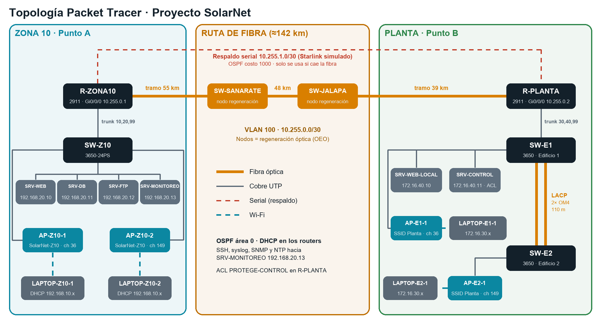

<meta charset="UTF-8" />
<title>Proyecto SolarNet</title>
<link rel="preconnect" href="https://fonts.googleapis.com" />
<link
  rel="stylesheet"
  href="https://fonts.googleapis.com/css2?family=Unbounded:wght@500;700&family=IBM+Plex+Sans:wght@400;500;600&family=IBM+Plex+Mono:wght@400;500&display=swap"
/>
<style>
  /* Layout: columna de lectura de ~1100px con navegación fija; cada problema es un "capítulo" con su barra de datos técnicos y piezas interactivas. */
  :root {
    --bg: #f4f6f7;
    --surface: #ffffff;
    --ink: #13202a;
    --muted: #596978;
    --line: #dbe1e6;
    --sun: #d97f00;
    --sun-soft: #fdf0db;
    --fiber: #0b87a1;
    --fiber-soft: #e1f3f7;
    --dfs: #c03a26;
    --dfs-soft: #fbe6e2;
    --ok: #2c8549;
    --ok-soft: #e2f3e7;
    --rack: #26323d;
    --rack-unit: #3a4855;
    --f-display: "Unbounded", "Arial Black", system-ui, sans-serif;
    --f-body: "IBM Plex Sans", "Segoe UI", system-ui, sans-serif;
    --f-mono: "IBM Plex Mono", ui-monospace, Consolas, monospace;
  }
  @media (prefers-color-scheme: dark) {
    :root:not([data-theme="light"]) {
      --bg: #0d141a;
      --surface: #151f28;
      --ink: #e6edf2;
      --muted: #94a4b2;
      --line: #26343f;
      --sun: #f3a532;
      --sun-soft: #3a2a10;
      --fiber: #3fc3dc;
      --fiber-soft: #10303a;
      --dfs: #f06a55;
      --dfs-soft: #3d1b16;
      --ok: #5cc480;
      --ok-soft: #163222;
      --rack: #0a1015;
      --rack-unit: #24313c;
      color-scheme: dark;
    }
  }
  :root[data-theme="dark"] {
    --bg: #0d141a;
    --surface: #151f28;
    --ink: #e6edf2;
    --muted: #94a4b2;
    --line: #26343f;
    --sun: #f3a532;
    --sun-soft: #3a2a10;
    --fiber: #3fc3dc;
    --fiber-soft: #10303a;
    --dfs: #f06a55;
    --dfs-soft: #3d1b16;
    --ok: #5cc480;
    --ok-soft: #163222;
    --rack: #0a1015;
    --rack-unit: #24313c;
    color-scheme: dark;
  }
  * {
    box-sizing: border-box;
  }
  body {
    background: var(--bg);
    color: var(--ink);
    font-family: var(--f-body);
    font-size: 16px;
    line-height: 1.6;
  }
  a {
    color: var(--fiber);
  }
  h1,
  h2,
  h3 {
    font-family: var(--f-display);
    text-wrap: balance;
    line-height: 1.2;
    margin: 0;
  }
  h2 {
    font-size: clamp(1.4rem, 3.2vw, 2rem);
  }
  h3 {
    font-size: 1.05rem;
    font-weight: 500;
    margin-top: 8px;
  }
  p {
    margin: 0;
  }
  .wrap {
    max-width: 1120px;
    margin: 0 auto;
    padding-inline: 20px;
  }
  .mono {
    font-family: var(--f-mono);
  }
  .eyebrow {
    font-family: var(--f-mono);
    font-size: 0.78rem;
    letter-spacing: 0.08em;
    text-transform: uppercase;
    color: var(--muted);
  }
  .lead {
    font-size: 1.1rem;
    color: var(--muted);
    max-width: 68ch;
  }
  .prose {
    max-width: 72ch;
    display: grid;
    gap: 12px;
  }
  .prose ul {
    margin: 0;
    padding-left: 1.2em;
    display: grid;
    gap: 6px;
  }

  /* nav */
  nav.top {
    position: sticky;
    top: env(safe-area-inset-top, 0px);
    z-index: 20;
    background: color-mix(in srgb, var(--bg) 88%, transparent);
    backdrop-filter: blur(8px);
    border-bottom: 1px solid var(--line);
  }
  nav.top .wrap {
    display: flex;
    align-items: center;
    gap: 18px;
    padding-block: 10px;
  }
  .brand {
    font-family: var(--f-display);
    font-weight: 700;
    font-size: 0.95rem;
    white-space: nowrap;
    display: flex;
    align-items: center;
    gap: 8px;
    text-decoration: none;
    color: var(--ink);
  }
  .brand i {
    width: 14px;
    height: 14px;
    border-radius: 50%;
    background: var(--sun);
    box-shadow: 0 0 0 3px var(--sun-soft);
  }
  .navlinks {
    display: flex;
    gap: 4px;
    overflow-x: auto;
    scrollbar-width: none;
  }
  .navlinks a {
    font-size: 0.85rem;
    color: var(--muted);
    text-decoration: none;
    padding: 6px 10px;
    border-radius: 6px;
    white-space: nowrap;
  }
  .navlinks a:hover,
  .navlinks a.on {
    color: var(--ink);
    background: var(--surface);
  }

  /* hero */
  header.hero {
    padding-block: 56px 40px;
  }
  .hero-grid {
    display: grid;
    grid-template-columns: 1.4fr 1fr;
    gap: 40px;
    align-items: center;
  }
  .hero h1 {
    font-size: clamp(2.2rem, 6vw, 4rem);
    font-weight: 700;
    letter-spacing: -0.01em;
  }
  .hero h1 span {
    color: var(--sun);
  }
  .hero .sub {
    margin-top: 16px;
    font-size: 1.15rem;
    max-width: 56ch;
    color: var(--muted);
  }
  .facts {
    display: flex;
    flex-wrap: wrap;
    gap: 10px;
    margin-top: 24px;
  }
  .fact {
    font-family: var(--f-mono);
    font-size: 0.82rem;
    border: 1px solid var(--line);
    background: var(--surface);
    padding: 6px 10px;
    border-radius: 6px;
  }
  .fact b {
    color: var(--fiber);
    font-weight: 500;
  }

  /* guía / avatar */
  .guide {
    background: var(--surface);
    border: 1px solid var(--line);
    border-radius: 14px;
    padding: 20px;
    display: grid;
    gap: 14px;
  }
  .guide-top {
    display: flex;
    gap: 14px;
    align-items: center;
  }
  .avatar {
    width: 84px;
    height: 84px;
    flex: none;
  }
  .avatar .rays {
    transform-origin: 50px 50px;
    animation: spin 24s linear infinite;
  }
  .avatar .mouth {
    transform-origin: 50px 63px;
    transition: transform 0.1s;
  }
  .talking .avatar .mouth {
    animation: talk 0.28s ease-in-out infinite alternate;
  }
  @keyframes spin {
    to {
      transform: rotate(360deg);
    }
  }
  @keyframes talk {
    from {
      transform: scaleY(0.3);
    }
    to {
      transform: scaleY(1.4);
    }
  }
  .bubble {
    background: var(--sun-soft);
    border-radius: 10px;
    padding: 12px 14px;
    font-size: 0.95rem;
    min-height: 84px;
  }
  .btns {
    display: flex;
    flex-wrap: wrap;
    gap: 8px;
  }
  button {
    font: inherit;
    cursor: pointer;
  }
  .btn {
    font-family: var(--f-body);
    font-weight: 600;
    font-size: 0.9rem;
    border: 1px solid var(--line);
    background: var(--surface);
    color: var(--ink);
    padding: 8px 14px;
    border-radius: 8px;
  }
  .btn:hover {
    border-color: var(--ink);
  }
  .btn.primary {
    background: var(--sun);
    border-color: var(--sun);
    color: #1b1100;
  }
  .btn:focus-visible,
  a:focus-visible,
  input:focus-visible,
  select:focus-visible,
  summary:focus-visible {
    outline: 3px solid var(--fiber);
    outline-offset: 2px;
  }
  .listen {
    font-family: var(--f-mono);
    font-size: 0.78rem;
    border: 1px solid var(--line);
    background: transparent;
    color: var(--muted);
    padding: 5px 10px;
    border-radius: 20px;
    display: inline-flex;
    gap: 6px;
    align-items: center;
  }
  .listen:hover {
    color: var(--ink);
    border-color: var(--ink);
  }

  /* secciones */
  section.chap {
    padding-block: 56px;
    border-top: 1px solid var(--line);
  }
  .chap-head {
    display: grid;
    gap: 10px;
    margin-bottom: 28px;
  }
  .chap-head .row {
    display: flex;
    flex-wrap: wrap;
    gap: 12px;
    align-items: center;
    justify-content: space-between;
  }
  .num {
    font-family: var(--f-display);
    color: var(--sun);
    font-size: 0.9rem;
  }
  .block {
    margin-top: 36px;
    display: grid;
    gap: 14px;
  }
  .grid2 {
    display: grid;
    grid-template-columns: 1fr 1fr;
    gap: 24px;
  }
  .grid3 {
    display: grid;
    grid-template-columns: repeat(3, 1fr);
    gap: 16px;
  }
  .grid2 > *,
  .grid3 > * {
    min-width: 0;
  }
  .panel {
    background: var(--surface);
    border: 1px solid var(--line);
    border-radius: 12px;
    padding: 18px;
  }
  .callout {
    border-left: 4px solid var(--sun);
    background: var(--sun-soft);
    padding: 14px 16px;
    border-radius: 0 10px 10px 0;
  }
  .callout.fiber {
    border-color: var(--fiber);
    background: var(--fiber-soft);
  }
  .callout.dfs {
    border-color: var(--dfs);
    background: var(--dfs-soft);
  }
  .kv {
    display: grid;
    grid-template-columns: auto 1fr;
    gap: 6px 14px;
    font-size: 0.92rem;
  }
  .kv dt {
    color: var(--muted);
  }
  .kv dd {
    margin: 0;
    font-family: var(--f-mono);
    font-size: 0.88rem;
  }
  .tag {
    font-family: var(--f-mono);
    font-size: 0.72rem;
    padding: 2px 7px;
    border-radius: 4px;
    background: var(--fiber-soft);
    color: var(--fiber);
    white-space: nowrap;
  }
  .tag.new {
    background: var(--ok-soft);
    color: var(--ok);
  }
  .tag.dfs {
    background: var(--dfs-soft);
    color: var(--dfs);
  }
  .tag.sun {
    background: var(--sun-soft);
    color: var(--sun);
  }

  /* tablas */
  .tbl {
    overflow-x: auto;
    border: 1px solid var(--line);
    border-radius: 10px;
    background: var(--surface);
  }
  table {
    border-collapse: collapse;
    width: 100%;
    font-size: 0.9rem;
  }
  th,
  td {
    padding: 9px 12px;
    text-align: left;
    border-bottom: 1px solid var(--line);
    vertical-align: top;
  }
  th {
    font-family: var(--f-mono);
    font-size: 0.75rem;
    letter-spacing: 0.05em;
    text-transform: uppercase;
    color: var(--muted);
    font-weight: 500;
    background: color-mix(in srgb, var(--surface) 92%, var(--ink));
  }
  tr:last-child td {
    border-bottom: none;
  }
  td.n,
  th.n {
    text-align: right;
    font-variant-numeric: tabular-nums;
    font-family: var(--f-mono);
    white-space: nowrap;
  }
  tr.total td {
    font-weight: 600;
    background: var(--sun-soft);
  }
  tr.sub td {
    color: var(--muted);
  }

  /* mapa */
  .map svg {
    width: 100%;
    height: auto;
    display: block;
  }
  .map .road {
    fill: none;
    stroke: var(--line);
    stroke-width: 10;
    stroke-linecap: round;
    stroke-linejoin: round;
  }
  .map .fiber {
    fill: none;
    stroke: var(--fiber);
    stroke-width: 3.5;
    stroke-linecap: round;
    stroke-linejoin: round;
  }
  .map .pulse {
    fill: none;
    stroke: var(--sun);
    stroke-width: 4;
    stroke-linecap: round;
    stroke-dasharray: 14 600;
    animation: flow 4s linear infinite;
  }
  @keyframes flow {
    from {
      stroke-dashoffset: 614;
    }
    to {
      stroke-dashoffset: 0;
    }
  }
  .map .air {
    stroke: var(--muted);
    stroke-dasharray: 4 6;
    stroke-width: 1.5;
    fill: none;
  }
  .map text {
    fill: var(--ink);
    font-family: var(--f-mono);
    font-size: 13px;
  }
  .map text.small {
    fill: var(--muted);
    font-size: 11px;
  }
  .map .node {
    cursor: pointer;
  }
  .map .node circle {
    stroke: var(--surface);
    stroke-width: 3;
  }
  .map .node:hover circle,
  .map .node.sel circle {
    stroke: var(--ink);
  }
  #nodeInfo {
    min-height: 120px;
  }

  /* presupuesto óptico */
  .budget-bar {
    height: 26px;
    border-radius: 6px;
    background: var(--line);
    position: relative;
    overflow: hidden;
  }
  .budget-bar .seg {
    position: absolute;
    top: 0;
    bottom: 0;
  }
  .budget-bar .lim {
    position: absolute;
    top: -4px;
    bottom: -4px;
    width: 2px;
    background: var(--dfs);
  }
  .legend {
    display: flex;
    flex-wrap: wrap;
    gap: 12px;
    font-size: 0.8rem;
    color: var(--muted);
  }
  .legend i {
    display: inline-block;
    width: 10px;
    height: 10px;
    border-radius: 2px;
    margin-right: 5px;
    vertical-align: -1px;
  }
  .seg-pick {
    display: flex;
    flex-wrap: wrap;
    gap: 6px;
  }
  .seg-pick button {
    font-family: var(--f-mono);
    font-size: 0.8rem;
    border: 1px solid var(--line);
    background: var(--surface);
    color: var(--ink);
    padding: 6px 10px;
    border-radius: 6px;
  }
  .seg-pick button.on {
    background: var(--fiber);
    color: var(--surface);
    border-color: var(--fiber);
  }
  .slider {
    display: grid;
    grid-template-columns: 150px 1fr 74px;
    gap: 10px;
    align-items: center;
    font-size: 0.88rem;
  }
  .slider output {
    font-family: var(--f-mono);
    text-align: right;
  }
  input[type="range"] {
    width: 100%;
    accent-color: var(--fiber);
  }
  .big {
    font-family: var(--f-display);
    font-size: 1.8rem;
  }
  .verdict {
    font-family: var(--f-mono);
    font-size: 0.85rem;
    padding: 4px 10px;
    border-radius: 5px;
    display: inline-block;
  }
  .verdict.ok {
    background: var(--ok-soft);
    color: var(--ok);
  }
  .verdict.bad {
    background: var(--dfs-soft);
    color: var(--dfs);
  }

  /* racks */
  .racks {
    display: grid;
    grid-template-columns: repeat(auto-fit, minmax(240px, 1fr));
    gap: 20px;
  }
  .rack-card {
    display: grid;
    gap: 8px;
  }
  .rack-card svg {
    width: 100%;
    height: auto;
    display: block;
  }
  .rack-card .cap {
    font-size: 0.85rem;
    color: var(--muted);
  }

  /* edificios diagrama */
  .diagram svg {
    width: 100%;
    height: auto;
    display: block;
  }
  .diagram text {
    font-family: var(--f-mono);
    font-size: 12px;
    fill: var(--ink);
  }
  .diagram .muted {
    fill: var(--muted);
  }

  /* planos */
  .tabs {
    display: flex;
    flex-wrap: wrap;
    gap: 6px;
  }
  .tabs button {
    border: 1px solid var(--line);
    background: var(--surface);
    color: var(--ink);
    padding: 8px 12px;
    border-radius: 8px;
    font-size: 0.88rem;
  }
  .tabs button.on {
    background: var(--ink);
    color: var(--surface);
    border-color: var(--ink);
  }
  .plan-wrap {
    display: grid;
    grid-template-columns: minmax(0, 1.3fr) minmax(0, 1fr);
    gap: 24px;
    align-items: start;
  }
  .plan {
    position: relative;
    background: #fff;
    border: 1px solid var(--line);
    border-radius: 10px;
    overflow: hidden;
    max-width: 100%;
  }
  .plan img {
    display: block;
    width: 100%;
    height: auto;
  }
  .ap {
    position: absolute;
    transform: translate(-50%, -50%);
    width: 30px;
    height: 30px;
    border-radius: 50%;
    border: 2px solid #fff;
    color: #fff;
    font-family: var(--f-mono);
    font-size: 0.68rem;
    font-weight: 500;
    display: grid;
    place-items: center;
    cursor: pointer;
    box-shadow: 0 2px 6px rgba(0, 0, 0, 0.35);
    z-index: 2;
    padding: 0;
  }
  .ap.nodfs {
    background: #1f7a3f;
  }
  .ap.isdfs {
    background: #b23522;
  }
  .ap.sel {
    outline: 3px solid #f3a532;
    outline-offset: 2px;
  }
  .cov {
    position: absolute;
    transform: translate(-50%, -50%);
    border-radius: 50%;
    pointer-events: none;
    z-index: 1;
  }
  .cov.nodfs {
    background: radial-gradient(
      circle,
      rgba(31, 122, 63, 0.3),
      rgba(31, 122, 63, 0.08) 70%,
      transparent 72%
    );
  }
  .cov.isdfs {
    background: radial-gradient(
      circle,
      rgba(178, 53, 34, 0.28),
      rgba(178, 53, 34, 0.07) 70%,
      transparent 72%
    );
  }
  .plan.nocov .cov {
    display: none;
  }
  .check {
    display: flex;
    gap: 8px;
    align-items: center;
    font-size: 0.88rem;
  }

  /* espectro */
  .spectrum svg {
    width: 100%;
    height: auto;
    display: block;
    min-width: 620px;
  }
  .spectrum text {
    font-family: var(--f-mono);
    font-size: 11px;
    fill: var(--ink);
  }
  .spectrum .muted {
    fill: var(--muted);
  }

  /* simulador DFS */
  .sim {
    display: grid;
    gap: 14px;
  }
  .lane {
    display: grid;
    grid-template-columns: 170px 1fr 120px;
    gap: 12px;
    align-items: center;
  }
  .lane > * {
    min-width: 0;
  }
  .track {
    height: 34px;
    border-radius: 6px;
    background: var(--line);
    position: relative;
    overflow: hidden;
  }
  .track .fill {
    position: absolute;
    top: 0;
    bottom: 0;
    left: 0;
    width: 0;
  }
  .track .mark {
    position: absolute;
    top: 0;
    bottom: 0;
    width: 2px;
    background: var(--ink);
  }
  .track .lbl {
    position: absolute;
    inset: 0;
    display: flex;
    align-items: center;
    padding-left: 10px;
    font-family: var(--f-mono);
    font-size: 0.75rem;
    color: #fff;
    mix-blend-mode: normal;
    text-shadow: 0 1px 2px rgba(0, 0, 0, 0.5);
  }
  .clients {
    font-family: var(--f-mono);
    font-size: 0.85rem;
    text-align: right;
  }
  .radar {
    display: inline-block;
    width: 12px;
    height: 12px;
    border-radius: 50%;
    background: var(--dfs);
    margin-right: 6px;
    vertical-align: -1px;
  }
  .radar.blink {
    animation: blink 0.5s ease-in-out 6;
  }
  @keyframes blink {
    50% {
      opacity: 0.1;
    }
  }

  /* throughput */
  .tp-out {
    display: grid;
    grid-template-columns: 1fr 1fr;
    gap: 12px;
  }
  .meter {
    display: grid;
    gap: 4px;
  }
  .meter .bar {
    height: 12px;
    background: var(--line);
    border-radius: 6px;
    overflow: hidden;
  }
  .meter .bar i {
    display: block;
    height: 100%;
    background: var(--fiber);
    border-radius: 6px;
    transition: width 0.3s;
  }
  select {
    font: inherit;
    font-size: 0.88rem;
    padding: 6px 8px;
    border-radius: 6px;
    border: 1px solid var(--line);
    background: var(--surface);
    color: var(--ink);
  }

  /* preguntas */
  details {
    border: 1px solid var(--line);
    border-radius: 10px;
    background: var(--surface);
  }
  details + details {
    margin-top: 8px;
  }
  summary {
    cursor: pointer;
    padding: 12px 16px;
    font-weight: 600;
    list-style: none;
    display: flex;
    justify-content: space-between;
    gap: 12px;
  }
  summary::-webkit-details-marker {
    display: none;
  }
  summary::after {
    content: "+";
    font-family: var(--f-mono);
    color: var(--muted);
  }
  details[open] summary::after {
    content: "–";
  }
  details .ans {
    padding: 0 16px 14px;
    color: var(--muted);
    max-width: 75ch;
  }

  /* totales */
  .totals {
    display: grid;
    grid-template-columns: repeat(4, 1fr);
    gap: 14px;
  }
  .totals > div {
    background: var(--surface);
    border: 1px solid var(--line);
    border-radius: 12px;
    padding: 16px;
    display: grid;
    gap: 4px;
  }
  .totals .v {
    font-family: var(--f-display);
    font-size: 1.35rem;
  }
  .totals .l {
    font-size: 0.82rem;
    color: var(--muted);
  }
  .totals .grand {
    background: var(--sun-soft);
    border-color: var(--sun);
  }

  .review {
    display: grid;
    grid-template-columns: repeat(2, 1fr);
    gap: 16px;
  }
  .review .panel {
    display: grid;
    gap: 8px;
  }
  .review .who {
    font-family: var(--f-display);
    font-size: 0.95rem;
  }
  .review p {
    color: var(--muted);
    font-size: 0.95rem;
  }
  footer {
    padding-block: 40px;
    border-top: 1px solid var(--line);
    color: var(--muted);
    font-size: 0.85rem;
  }

  @media (max-width: 860px) {
    .hero-grid,
    .grid2,
    .plan-wrap,
    .review {
      grid-template-columns: 1fr;
    }
    .grid3,
    .totals {
      grid-template-columns: 1fr 1fr;
    }
    .lane {
      grid-template-columns: 1fr;
    }
    .clients {
      text-align: left;
    }
    .slider {
      grid-template-columns: 1fr 64px;
    }
    .slider label {
      grid-column: 1/-1;
    }
  }
  @media (max-width: 480px) {
    .grid3,
    .totals,
    .tp-out {
      grid-template-columns: 1fr;
    }
  }
  @media (prefers-reduced-motion: reduce) {
    .avatar .rays,
    .map .pulse,
    .talking .avatar .mouth {
      animation: none;
    }
  }
</style>

<nav class="top" aria-label="Secciones">
  <div class="wrap">
    <a class="brand" href="#inicio"><i></i>SolarNet</a>
    <div class="navlinks" id="navlinks">
      <a href="#equipo">Equipo</a>
      <a href="#enlace">1 · Fibra</a>
      <a href="#microondas">1 · Microondas</a>
      <a href="#comparacion">Comparación</a>
      <a href="#edificios">2 · Edificios</a>
      <a href="#wifi">3 · Wi-Fi</a>
      <a href="#dfs">DFS</a>
      <a href="#packet">Packet Tracer</a>
      <a href="#costos">Costos</a>
      <a href="#conclusiones">Conclusiones</a>
      <a href="#resenas">Reseñas</a>
    </div>
  </div>
</nav>

<header class="hero" id="inicio">
  <div class="wrap hero-grid">
    <div>
      <p class="eyebrow">
        Universidad Mariano Gálvez · Telecomunicaciones · Sección C · Proyecto
        final
      </p>
      <h1 style="margin-top: 12px">Proyecto <span>SolarNet</span></h1>
      <p class="sub">
        <b
          >SolarNet: Enlace de Fibra Óptica Zona 10 – San Manuel Chaparrón y Red
          Wi-Fi 6E con DFS.</b
        >
        Diseño de infraestructura de telecomunicaciones para <b>Max-Pro2</b>:
        enlace de fibra óptica entre la Zona 10 y la planta solar de San Manuel
        Chaparrón, interconexión de sus dos edificios y red Wi-Fi 6E con
        estrategia DFS.
      </p>
      <div class="facts">
        <span class="fact">A ↔ B: <b>2 propuestas</b></span>
        <span class="fact"
          >Fibra <b>142 km</b> · Microondas <b>3 saltos</b></span
        >
        <span class="fact">Recomendada: <b>fibra</b></span>
        <span class="fact">Edificios <b>110 m</b> · OM4</span>
        <span class="fact"><b>15</b> AP Wi-Fi 6E</span>
        <span class="fact">≥ <b>200/100 Mbps</b> por usuario</span>
      </div>
    </div>
    <aside class="guide" id="guide" aria-label="Guía narrada">
      <div class="guide-top">
        <svg class="avatar" viewBox="0 0 100 100" aria-hidden="true">
          <g
            class="rays"
            stroke="var(--sun)"
            stroke-width="5"
            stroke-linecap="round"
          >
            <line x1="50" y1="4" x2="50" y2="14" />
            <line x1="50" y1="86" x2="50" y2="96" />
            <line x1="4" y1="50" x2="14" y2="50" />
            <line x1="86" y1="50" x2="96" y2="50" />
            <line x1="17" y1="17" x2="24" y2="24" />
            <line x1="76" y1="76" x2="83" y2="83" />
            <line x1="83" y1="17" x2="76" y2="24" />
            <line x1="24" y1="76" x2="17" y2="83" />
          </g>
          <circle cx="50" cy="50" r="30" fill="var(--sun)" />
          <circle cx="40" cy="45" r="4" fill="#1b1100" />
          <circle cx="60" cy="45" r="4" fill="#1b1100" />
          <ellipse class="mouth" cx="50" cy="63" rx="9" ry="4" fill="#1b1100" />
        </svg>
        <div>
          <p style="font-family: var(--f-display); font-size: 1rem">
            Hola, soy Sol
          </p>
          <p class="eyebrow" style="text-transform: none; letter-spacing: 0">
            Tu guía por el proyecto
          </p>
        </div>
      </div>
      <div class="bubble" id="bubble" aria-live="polite">
        Pulsa <b>Iniciar recorrido</b> y te explico con voz cada parte de la
        solución, sección por sección. También puedes escuchar una sola sección
        con los botones <span class="mono">▶ Escuchar</span>.
      </div>
      <div class="btns">
        <button class="btn primary" id="tourBtn">▶ Iniciar recorrido</button>
        <button class="btn" id="stopBtn">■ Detener</button>
      </div>
    </aside>
  </div>
</header>

<main>
  <!-- ============ CARÁTULA / EQUIPO / ÍNDICE ============ -->
  <section class="chap" id="equipo">
    <div class="wrap">
      <div class="chap-head">
        <div class="row">
          <p class="num">Carátula e índice</p>
          <button class="listen" data-narr="equipo">▶ Escuchar</button>
        </div>
        <h2>Equipo de trabajo</h2>
        <p class="lead">
          El trabajo se repartió en partes iguales. Cada integrante desarrolló
          una sección y todos revisaron las demás para poder defender la
          propuesta completa.
        </p>
      </div>
      <div class="tbl">
        <table>
          <thead>
            <tr>
              <th>No.</th>
              <th>Carné</th>
              <th>Nombre completo</th>
              <th>Puesto</th>
              <th class="n">% de trabajo</th>
            </tr>
          </thead>
          <tbody id="teamBody"></tbody>
        </table>
      </div>

      <div class="block">
        <h3>Índice</h3>
        <div class="tbl">
          <table>
            <thead>
              <tr>
                <th>Sección</th>
                <th>Contenido</th>
                <th>Desarrolló</th>
              </tr>
            </thead>
            <tbody id="indexBody"></tbody>
          </table>
        </div>
      </div>

      <div class="block">
        <h3>El cliente y el problema</h3>
        <div class="grid2">
          <div class="panel prose">
            <p class="eyebrow">Punto A · Oficinas centrales</p>
            <p>
              <b
                >Edificio Las Margaritas, 6.º nivel, Zona 10, Ciudad de
                Guatemala.</b
              >
              Centro de datos con nube privada de virtualización (servidores
              web, bases de datos, FTP y monitoreo), SAN, SAN de respaldo,
              firewall, routers y switches. Sala de ingeniería con cableado UTP
              que se reemplaza por Wi-Fi para las nuevas laptops.
            </p>
          </div>
          <div class="panel prose">
            <p class="eyebrow">Punto B · Planta fotovoltaica</p>
            <p>
              <b>San Manuel Chaparrón, Jalapa</b>
              <span class="mono">(14.521165, -89.764833)</span>. Routers,
              switches, firewall, servidores web de acceso local y servidores de
              control de flujo eléctrico. Dos edificios de oficinas separados
              por <b>110 m</b> que necesitan Wi-Fi e interconexión.
            </p>
          </div>
        </div>
      </div>
    </div>
  </section>

  <!-- ============ 1. ENLACE A–B ============ -->
  <section class="chap" id="enlace">
    <div class="wrap">
      <div class="chap-head">
        <div class="row">
          <p class="num">
            Requerimiento 1 · Propuesta 1 de 2 · Medio guiado · Recomendada
          </p>
          <button class="listen" data-narr="enlace">▶ Escuchar</button>
        </div>
        <h2>
          Propuesta 1: fibra óptica monomodo de Zona 10 a San Manuel Chaparrón
        </h2>
        <p class="lead">
          El requerimiento permite un medio guiado o uno no guiado, así que
          desarrollamos las dos propuestas completas. La primera es un cable de
          fibra óptica monomodo propio, tendido en postería a lo largo de las
          carreteras CA-9 y CA-19, con dos nodos de regeneración y un enlace
          satelital de respaldo.
        </p>
      </div>

      <div class="grid2">
        <div class="panel">
          <p class="eyebrow">i · Medio físico seleccionado</p>
          <h3>Fibra monomodo ITU-T G.652.D, cable ADSS de 24 hilos</h3>
          <dl class="kv" style="margin-top: 12px">
            <dt>Tipo</dt>
            <dd>Monomodo (SMF) 9/125 µm</dd>
            <dt>Cable</dt>
            <dd>ADSS aéreo autosoportado, totalmente dieléctrico</dd>
            <dt>Ventana</dt>
            <dd>1550 nm · ≤ 0.25 dB/km</dd>
            <dt>Hilos</dt>
            <dd>24 (2 en uso, 2 respaldo, 20 crecimiento)</dd>
            <dt>Transmisión</dt>
            <dd>10GBASE-ZR (SFP+ 80 km)</dd>
            <dt>Respaldo</dt>
            <dd>Starlink Business + túnel IPsec</dd>
          </dl>
        </div>
        <div class="callout fiber prose">
          <p><b>¿Por qué fibra y no microondas?</b></p>
          <ul>
            <li>
              La fibra transmite luz, así que no le afecta la interferencia
              electromagnética, la lluvia ni la falta de línea de vista. Su tasa
              de error de bits ronda 10⁻¹².
            </li>
            <li>
              Un radioenlace de 80 km en el oriente montañoso necesita 2 o 3
              repetidoras en cerros y sufre desvanecimiento por lluvia en
              invierno.
            </li>
            <li>
              El cable ADSS es dieléctrico: puede ir en los mismos postes que
              líneas eléctricas sin inducción ni riesgo de descarga.
            </li>
            <li>
              Ningún medio garantiza un 0 % literal. Nos acercamos con fibra más
              un respaldo por un camino distinto (satélite) con conmutación
              automática.
            </li>
          </ul>
        </div>
      </div>

      <div class="block">
        <p class="eyebrow">ii · Ruta física del medio</p>
        <h3>
          Ruta Zona 10 → Sanarate → Jalapa → Monjas → San Manuel Chaparrón
        </h3>
        <div class="grid2">
          <div class="panel map" style="padding: 10px">
            <svg
              viewBox="0 0 820 380"
              role="img"
              aria-label="Mapa esquemático de la ruta de fibra"
              id="routeMap"
            ></svg>
            <div class="legend" style="padding: 6px 8px 4px">
              <span
                ><i style="background: var(--fiber)"></i>Fibra propuesta (≈142
                km)</span
              ><span
                ><i style="background: var(--muted)"></i>Línea recta A–B (80.5
                km)</span
              ><span
                ><i style="background: var(--sun)"></i>Nodo de
                regeneración</span
              >
            </div>
          </div>
          <div class="panel prose" id="nodeInfo" aria-live="polite"></div>
        </div>
        <p style="font-size: 0.85rem; color: var(--muted)">
          Esquema geográfico aproximado generado con las coordenadas de cada
          punto. Las distancias por carretera son estimadas y se confirman con
          el levantamiento de campo.
          <a
            href="https://www.google.com/maps/dir/14.597,-90.508/14.521165,-89.764833"
            target="_blank"
            rel="noopener"
            >Ver ruta en Google Maps</a
          >
        </p>
      </div>

      <div class="block">
        <p class="eyebrow">
          iii · Puntos de repotencia (regeneración) de los tramos ópticos
        </p>
        <h3>Presupuesto de potencia óptica por tramo</h3>
        <p class="prose" style="color: var(--muted)">
          Un transceptor 10GBASE-ZR transmite alrededor de 0 dBm y su receptor
          detecta hasta −24 dBm, así que soporta unos <b>24 dB</b> de pérdida.
          Los 142 km completos pierden unos 43 dB. Como se vio en clase, la
          fibra se repotencia cada ~50 km, por eso dividimos la ruta en tres
          tramos con nodos de regeneración óptico-eléctrico-óptico (OEO) en
          <b>Sanarate</b> y <b>Jalapa</b>. Elige un tramo y mueve los controles.
        </p>
        <div class="grid2">
          <div class="panel" style="display: grid; gap: 14px">
            <div class="seg-pick" id="segPick"></div>
            <div class="slider">
              <label for="lbDist">Distancia (km)</label
              ><input
                type="range"
                id="lbDist"
                min="5"
                max="140"
                step="1"
              /><output id="oDist"></output>
            </div>
            <div class="slider">
              <label for="lbAtt">Atenuación (dB/km)</label
              ><input
                type="range"
                id="lbAtt"
                min="0.18"
                max="0.35"
                step="0.01"
              /><output id="oAtt"></output>
            </div>
            <div class="slider">
              <label for="lbReel">Bobina cada (km)</label
              ><input
                type="range"
                id="lbReel"
                min="2"
                max="6"
                step="1"
              /><output id="oReel"></output>
            </div>
            <div class="slider">
              <label for="lbMargin">Margen (dB)</label
              ><input
                type="range"
                id="lbMargin"
                min="0"
                max="6"
                step="0.5"
              /><output id="oMargin"></output>
            </div>
          </div>
          <div
            class="panel"
            style="display: grid; gap: 12px; align-content: start"
          >
            <div
              style="
                display: flex;
                justify-content: space-between;
                align-items: end;
                gap: 10px;
                flex-wrap: wrap;
              "
            >
              <div>
                <p class="eyebrow">Pérdida total</p>
                <p class="big" id="lbTotal"></p>
              </div>
              <span class="verdict" id="lbVerdict"></span>
            </div>
            <div class="budget-bar" id="lbBar"></div>
            <div class="legend">
              <span><i style="background: var(--fiber)"></i>Fibra</span
              ><span><i style="background: var(--sun)"></i>Empalmes</span
              ><span><i style="background: var(--muted)"></i>Conectores</span
              ><span
                ><i
                  style="
                    background: var(--dfs-soft);
                    border: 1px solid var(--dfs);
                  "
                ></i
                >Margen</span
              ><span
                ><i style="background: var(--dfs)"></i>Límite ZR 24 dB</span
              >
            </div>
            <dl class="kv" id="lbDetail"></dl>
          </div>
        </div>
        <div class="tbl">
          <table>
            <thead>
              <tr>
                <th>Tramo</th>
                <th class="n">Distancia</th>
                <th class="n">Fibra</th>
                <th class="n">Empalmes</th>
                <th class="n">Conect.</th>
                <th class="n">Margen</th>
                <th class="n">Total</th>
                <th class="n">Holgura vs 24 dB</th>
              </tr>
            </thead>
            <tbody id="lbTable"></tbody>
          </table>
        </div>
      </div>

      <div class="block">
        <p class="eyebrow">iv · Routers en los puntos A y B</p>
        <div class="grid2">
          <div class="panel prose">
            <h3>
              Cisco Catalyst 8300-1N1S-4T2X <span class="tag new">A y B</span>
            </h3>
            <ul>
              <li>
                2 puertos <b>10G SFP+</b> para el transceptor ZR y 4 puertos 1G
                para firewall y respaldo.
              </li>
              <li>
                Plataforma SD-WAN: une la fibra y Starlink en una sola WAN y
                conmuta en menos de 1 s.
              </li>
              <li>
                <b>IP SLA</b> mide latencia, jitter y pérdida cada 10 s y
                dispara la conmutación.
              </li>
              <li>Cifrado IPsec por hardware y doble fuente de poder.</li>
              <li>
                El mismo modelo en ambos extremos simplifica repuestos y
                configuración.
              </li>
            </ul>
          </div>
          <div class="panel prose">
            <h3>Nodos de regeneración (Sanarate y Jalapa)</h3>
            <ul>
              <li>
                Gabinete exterior IP55 de 12U con climatización y puesta a
                tierra.
              </li>
              <li>
                Switch Cisco Catalyst 9200L-24T-4X con 2 SFP+ ZR: recibe la luz,
                regenera la señal eléctrica y la reenvía con potencia completa.
              </li>
              <li>
                Energía con
                <b>panel solar de 2×550 W y baterías LiFePO4</b> para 8 h de
                autonomía. Usa la misma tecnología que vende Max-Pro2.
              </li>
            </ul>
          </div>
        </div>
      </div>

      <div class="block">
        <p class="eyebrow">
          vii · Esquema de ubicación de los equipos en el rack
        </p>
        <div class="racks" id="racks1"></div>
        <div class="legend">
          <span
            ><i style="background: #2f8f55"></i>Equipo nuevo del proyecto</span
          ><span><i style="background: #5f6f7e"></i>Equipo existente</span
          ><span><i style="background: #c98a1a"></i>Fibra / ODF</span
          ><span><i style="background: #8a5ac2"></i>Energía</span>
        </div>
      </div>

      <div class="block">
        <p class="eyebrow">viii · Selección de servicios de monitoreo</p>
        <div class="grid3">
          <div class="panel prose">
            <h3>Zabbix</h3>
            <p>
              Servidor en la nube privada existente. Sondea por
              <b>SNMPv3</b> routers, switches, firewall, UPS y nodos. Alerta por
              correo y Telegram.
            </p>
          </div>
          <div class="panel prose">
            <h3>Potencia óptica (DOM)</h3>
            <p>
              Cada SFP+ reporta la potencia de recepción. Zabbix grafica la
              tendencia y avisa si cae 3 dB, <b>antes</b> de que el enlace se
              corte por un cable dañado.
            </p>
          </div>
          <div class="panel prose">
            <h3>Cisco IP SLA</h3>
            <p>
              Pruebas cada 10 s de latencia, jitter y pérdida entre A y B.
              Decide la conmutación al respaldo.
            </p>
          </div>
          <div class="panel prose">
            <h3>Grafana e indicadores</h3>
            <p>
              Tablero con la meta de SLA de 99.99 %, el tráfico y los tiempos
              MTTD (detección) y MTTR (reparación), bajo el modelo FCAPS.
            </p>
          </div>
          <div class="panel prose">
            <h3>SOC con Wazuh</h3>
            <p>
              SIEM que centraliza los registros de firewalls, servidores y
              Active Directory. Junto con NetFlow y Graylog cubre la seguridad y
              el consumo de ancho de banda.
            </p>
          </div>
          <div class="panel prose">
            <h3>OTDR trimestral</h3>
            <p>
              Una prueba reflectométrica cada trimestre ubica empalmes
              degradados y dobleces por kilómetro.
            </p>
          </div>
        </div>
      </div>

      <div class="block">
        <p class="eyebrow">v · Costos de la interconexión (USD)</p>
        <div class="tbl">
          <table>
            <thead>
              <tr>
                <th>Concepto</th>
                <th class="n">Cant.</th>
                <th class="n">Unitario</th>
                <th class="n">Subtotal</th>
              </tr>
            </thead>
            <tbody id="cost1"></tbody>
          </table>
        </div>
        <div class="callout prose">
          <p>
            <b>Costo de operación de esta propuesta:</b> ≈US$43,000 al año
            (postería $24,000, mantenimiento de fibra $10,000, Starlink $3,000 y
            soporte $6,000). Es la propuesta recomendada porque es la única que
            asegura la meta de 0 % de paquetes perdidos. Por su costo, también
            evaluamos la Propuesta 2.
          </p>
        </div>
        <p style="font-size: 0.85rem; color: var(--muted)">
          Precios de referencia del mercado guatemalteco 2025–2026. Deben
          confirmarse con cotizaciones formales de proveedores.
        </p>
      </div>

      <div class="block">
        <p class="eyebrow">
          vi · Justificación: preguntas que nos pueden hacer
        </p>
        <div id="qa1"></div>
      </div>
    </div>
  </section>

  <!-- ============ PROPUESTA 2 MICROONDAS ============ -->
  <section class="chap" id="microondas">
    <div class="wrap">
      <div class="chap-head">
        <div class="row">
          <p class="num">
            Requerimiento 1 · Propuesta 2 de 2 · Medio no guiado · Alternativa
            evaluada
          </p>
          <button class="listen" data-narr="microondas">▶ Escuchar</button>
        </div>
        <h2>Propuesta 2: radioenlace de microondas en 3 saltos</h2>
        <p class="lead">
          Un radioenlace licenciado de 8 GHz que sube a puntos altos para librar
          las montañas del oriente. Las repetidoras van en torres alquiladas y
          los radios son del cliente. Cuesta cerca de cuatro veces menos que la
          fibra, pero depende de la línea de vista y del clima.
        </p>
      </div>
      <div class="grid2">
        <div class="panel">
          <p class="eyebrow">i · Medio seleccionado</p>
          <h3>Microondas licenciadas, 8 GHz, 2+0 XPIC</h3>
          <dl class="kv" style="margin-top: 12px">
            <dt>Tipo</dt>
            <dd>Medio no guiado · radio punto a punto</dd>
            <dt>Banda</dt>
            <dd>8 GHz licenciada (SIT) · canales de 56 MHz</dd>
            <dt>Configuración</dt>
            <dd>2+0 XPIC (polarización H y V)</dd>
            <dt>Modulación</dt>
            <dd>Adaptativa QPSK → 1024-QAM</dd>
            <dt>Capacidad</dt>
            <dd>≈1 Gbps · ≈800 Mbps con lluvia fuerte</dd>
            <dt>Saltos</dt>
            <dd>3 · ≈90 km de trayecto · 2 repetidoras</dd>
            <dt>Respaldo</dt>
            <dd>Starlink Business + túnel IPsec</dd>
          </dl>
        </div>
        <div class="callout fiber prose">
          <p><b>¿Por qué esta configuración?</b></p>
          <ul>
            <li>
              <b>8 GHz:</b> por debajo de 10 GHz la lluvia casi no atenúa la
              señal, así que cada salto puede medir ~30 km.
            </li>
            <li>
              <b>Banda licenciada:</b> la SIT asigna la frecuencia en exclusiva,
              sin interferencias de otros enlaces.
            </li>
            <li>
              <b>Modulación adaptativa:</b> con lluvia intensa el enlace baja de
              velocidad en lugar de cortarse.
            </li>
            <li>
              <b>Torres alquiladas (colocación):</b> no se compran terrenos ni
              se construyen torres en los cerros.
            </li>
            <li>
              <b>XPIC:</b> usa las dos polarizaciones de la misma frecuencia y
              duplica la capacidad sin pagar otro canal.
            </li>
          </ul>
        </div>
      </div>

      <div class="block">
        <p class="eyebrow">
          ii · Ruta del medio · iii · Posición de las estaciones repetidoras
        </p>
        <div class="grid2">
          <div class="panel map" style="padding: 10px">
            <svg
              viewBox="0 0 820 380"
              role="img"
              aria-label="Trayecto del radioenlace"
              id="mwMap"
            ></svg>
            <div class="legend" style="padding: 6px 8px 4px">
              <span
                ><i style="background: var(--dfs)"></i>Salto de radio 8
                GHz</span
              ><span
                ><i style="background: var(--ink)"></i>Torre / repetidora</span
              >
            </div>
          </div>
          <div class="tbl">
            <table>
              <thead>
                <tr>
                  <th>Sitio</th>
                  <th>Ubicación</th>
                  <th>Infraestructura</th>
                </tr>
              </thead>
              <tbody>
                <tr>
                  <td><b>A</b></td>
                  <td>
                    Azotea Edificio Las Margaritas, Zona 10<br /><span
                      class="mono"
                      style="font-size: 0.8rem"
                      >14.597, −90.508</span
                    >
                  </td>
                  <td>Mástil de 6 m con pararrayos</td>
                </tr>
                <tr>
                  <td><b>R1</b></td>
                  <td>
                    Cerro entre Palencia y San José del Golfo<br /><span
                      class="mono"
                      style="font-size: 0.8rem"
                      >14.720, −90.250</span
                    >
                  </td>
                  <td>Torre de colocación alquilada</td>
                </tr>
                <tr>
                  <td><b>R2</b></td>
                  <td>
                    Volcán Jumay, Jalapa (≈2,100 msnm)<br /><span
                      class="mono"
                      style="font-size: 0.8rem"
                      >14.700, −89.990</span
                    >
                  </td>
                  <td>Torre de colocación alquilada</td>
                </tr>
                <tr>
                  <td><b>B</b></td>
                  <td>
                    Planta San Manuel Chaparrón<br /><span
                      class="mono"
                      style="font-size: 0.8rem"
                      >14.521165, −89.764833</span
                    >
                  </td>
                  <td>Torre propia autosoportada de 30 m</td>
                </tr>
              </tbody>
            </table>
          </div>
        </div>
        <p style="font-size: 0.85rem; color: var(--muted)">
          Las ubicaciones de R1 y R2 son aproximadas. Se confirman con el perfil
          de terreno (Radio Mobile o Google Earth) y la disponibilidad de torres
          de colocación existentes.
        </p>
      </div>

      <div class="block">
        <p class="eyebrow">Cálculo del radioenlace por salto</p>
        <h3>¿Alcanza la señal? ¿Aguanta la lluvia?</h3>
        <p class="prose" style="color: var(--muted)">
          Pérdida en espacio libre: FSPL = 92.45 + 20·log(f) + 20·log(d). Radios
          de +24 dBm, antenas de 1.2 m (37.4 dBi) y receptor de −61 dBm en
          1024-QAM. La lluvia se calcula con 95 mm/h (UIT-R P.838/P.530). Elige
          un salto y mueve los controles.
        </p>
        <div class="grid2">
          <div class="panel" style="display: grid; gap: 14px">
            <div class="seg-pick" id="mwPick"></div>
            <div class="slider">
              <label for="mwDist">Distancia (km)</label
              ><input
                type="range"
                id="mwDist"
                min="5"
                max="90"
                step="0.1"
              /><output id="oMwDist"></output>
            </div>
            <div class="slider">
              <label for="mwFreq">Frecuencia (GHz)</label
              ><input
                type="range"
                id="mwFreq"
                min="6"
                max="23"
                step="1"
              /><output id="oMwFreq"></output>
            </div>
            <div class="slider">
              <label for="mwAnt">Antena (dBi)</label
              ><input
                type="range"
                id="mwAnt"
                min="30"
                max="45"
                step="0.1"
              /><output id="oMwAnt"></output>
            </div>
          </div>
          <div
            class="panel"
            style="display: grid; gap: 12px; align-content: start"
          >
            <div
              style="
                display: flex;
                justify-content: space-between;
                align-items: end;
                gap: 10px;
                flex-wrap: wrap;
              "
            >
              <div>
                <p class="eyebrow">Margen vs. lluvia</p>
                <p class="big" id="mwMargin"></p>
              </div>
              <span class="verdict" id="mwVerdict"></span>
            </div>
            <dl class="kv" id="mwDetail"></dl>
          </div>
        </div>
        <div class="tbl">
          <table>
            <thead>
              <tr>
                <th>Salto</th>
                <th class="n">Distancia</th>
                <th class="n">FSPL</th>
                <th class="n">Señal</th>
                <th class="n">Margen</th>
                <th class="n">Lluvia 0.01 %</th>
                <th class="n">Fresnel</th>
                <th class="n">Abultamiento</th>
              </tr>
            </thead>
            <tbody id="mwTable"></tbody>
          </table>
        </div>
      </div>

      <div class="block">
        <p class="eyebrow">iv · Equipos y routers en A y B</p>
        <div class="grid3">
          <div class="panel prose">
            <h3>Cambium PTP 820S</h3>
            <p>
              Radio licenciado todo-exterior de 8 GHz. Cuatro por salto (2+0
              XPIC), modulación adaptativa hasta 4096-QAM y gestión SNMP.
            </p>
          </div>
          <div class="panel prose">
            <h3>Antenas de 1.2 m</h3>
            <p>
              Parabólicas de doble polaridad con 37.4 dBi de ganancia. Dos por
              salto, alineadas por torreros certificados.
            </p>
          </div>
          <div class="panel prose">
            <h3>Cisco Catalyst 8300</h3>
            <p>
              El mismo router en A y B: SD-WAN, IP SLA e IPsec. Une el
              radioenlace y Starlink en una sola WAN.
            </p>
          </div>
        </div>
      </div>

      <div class="block">
        <p class="eyebrow">Esquema de ubicación de los equipos en el rack</p>
        <div class="racks" id="racksMw"></div>
      </div>

      <div class="block">
        <p class="eyebrow">Selección de servicios de monitoreo</p>
        <div class="grid3">
          <div class="panel prose">
            <h3>Señal y modulación</h3>
            <p>
              Cada radio reporta su nivel de señal recibida (RSL) y la
              modulación en uso. Zabbix alerta si la señal cae o la modulación
              baja.
            </p>
          </div>
          <div class="panel prose">
            <h3>Alarmas de sitio</h3>
            <p>
              Voltaje de baterías y apertura de puerta en las repetidoras R1 y
              R2.
            </p>
          </div>
          <div class="panel prose">
            <h3>NOC + SOC</h3>
            <p>
              IP SLA cada 10 s, Grafana con SLA de 99.99 %, MTTD y MTTR, y Wazuh
              para la seguridad. Si el radioenlace falla, la conmutación a
              Starlink es automática.
            </p>
          </div>
        </div>
      </div>

      <div class="block">
        <p class="eyebrow">v · Costos de la interconexión (USD)</p>
        <div class="tbl">
          <table>
            <thead>
              <tr>
                <th>Concepto</th>
                <th class="n">Cant.</th>
                <th class="n">Unitario</th>
                <th class="n">Subtotal</th>
              </tr>
            </thead>
            <tbody id="cost1b"></tbody>
          </table>
        </div>
        <p style="font-size: 0.85rem; color: var(--muted)">
          Operación anual ≈US$30,400: alquiler de 2 torres $14,400, licencia SIT
          $3,000, mantenimiento $6,000, Starlink $3,000 y soporte $4,000.
        </p>
      </div>

      <div class="block">
        <p class="eyebrow">
          vi · Justificación: preguntas que nos pueden hacer
        </p>
        <div id="qaMw"></div>
      </div>
    </div>
  </section>

  <!-- ============ COMPARACIÓN ============ -->
  <section class="chap" id="comparacion">
    <div class="wrap">
      <div class="chap-head">
        <div class="row">
          <p class="num">Requerimiento 1 · Comparación y recomendación</p>
          <button class="listen" data-narr="comparacion">▶ Escuchar</button>
        </div>
        <h2>Fibra, microondas o servicio de un ISP</h2>
        <p class="lead">
          Las dos propuestas cumplen el requerimiento. La diferencia está en el
          costo, la capacidad y cuánto depende cada una del clima.
        </p>
      </div>
      <div class="tbl">
        <table>
          <thead>
            <tr>
              <th>Criterio</th>
              <th>
                Propuesta 1 · Fibra <span class="tag new">recomendada</span>
              </th>
              <th>Propuesta 2 · Microondas</th>
              <th>Servicio ISP (referencia)</th>
            </tr>
          </thead>
          <tbody id="cmpBody"></tbody>
        </table>
      </div>
      <div class="block callout prose">
        <p>
          <b>Recomendación.</b> Proponemos la <b>Propuesta 1 (fibra)</b>. El
          requerimiento pide 0 % de paquetes perdidos y, como se vio en clase,
          el agua es el mayor enemigo de los enlaces exteriores: la fibra es
          inmune a la lluvia y a las interferencias y no necesita línea de
          vista. Además, con fibra propia el cliente controla la ruta, la
          repotencia y los costos. La <b>Propuesta 2</b> cuesta cerca de cuatro
          veces menos y queda como alternativa si el presupuesto no alcanza. El
          servicio de un ISP no sirve como solución principal porque el operador
          decide la ruta y la repotencia; solo serviría como respaldo adicional.
        </p>
      </div>
    </div>
  </section>

  <!-- ============ 2. EDIFICIOS ============ -->
  <section class="chap" id="edificios">
    <div class="wrap">
      <div class="chap-head">
        <div class="row">
          <p class="num">
            Requerimiento 2 · Solución conectividad edificios en punto B
          </p>
          <button class="listen" data-narr="edificios">▶ Escuchar</button>
        </div>
        <h2>Fibra multimodo OM4 subterránea entre los dos edificios</h2>
        <p class="lead">
          Los edificios están a 110 m. El cable UTP no alcanza, así que los
          unimos con fibra multimodo OM4 en ducto subterráneo, con dos enlaces
          de 10 Gbps agregados y un radioenlace de 60 GHz como respaldo.
        </p>
      </div>

      <div class="panel diagram" style="padding: 10px; overflow-x: auto">
        <svg
          viewBox="0 0 900 300"
          role="img"
          aria-label="Corte del enlace subterráneo entre edificios"
          style="min-width: 640px"
        >
          <rect x="0" y="150" width="900" height="150" fill="var(--sun-soft)" />
          <line
            x1="0"
            y1="150"
            x2="900"
            y2="150"
            stroke="var(--muted)"
            stroke-width="2"
          />
          <rect
            x="30"
            y="40"
            width="160"
            height="110"
            fill="var(--surface)"
            stroke="var(--ink)"
            stroke-width="2"
          />
          <text x="110" y="70" text-anchor="middle">Edificio 1</text>
          <text x="110" y="88" text-anchor="middle" class="muted">
            Ingeniería / rack 24U
          </text>
          <rect
            x="710"
            y="40"
            width="160"
            height="110"
            fill="var(--surface)"
            stroke="var(--ink)"
            stroke-width="2"
          />
          <text x="790" y="70" text-anchor="middle">Edificio 2</text>
          <text x="790" y="88" text-anchor="middle" class="muted">
            Administración / rack 9U
          </text>
          <rect x="95" y="105" width="30" height="40" fill="var(--rack)" />
          <rect x="775" y="105" width="30" height="40" fill="var(--rack)" />
          <path
            d="M110 145 V215 H790 V145"
            fill="none"
            stroke="var(--fiber)"
            stroke-width="5"
          />
          <path
            d="M110 145 V225 H790 V145"
            fill="none"
            stroke="var(--muted)"
            stroke-width="3"
            stroke-dasharray="6 5"
          />
          <rect
            x="95"
            y="205"
            width="30"
            height="30"
            fill="none"
            stroke="var(--ink)"
          />
          <rect
            x="435"
            y="205"
            width="30"
            height="30"
            fill="none"
            stroke="var(--ink)"
          />
          <rect
            x="775"
            y="205"
            width="30"
            height="30"
            fill="none"
            stroke="var(--ink)"
          />
          <text x="450" y="260" text-anchor="middle">
            Ducto PVC 2" doble a 0.60 m · cajas de registro en 0, 55 y 110 m
          </text>
          <text x="450" y="200" text-anchor="middle" style="fill: var(--fiber)">
            Fibra OM4 12 hilos · 2×10GBASE-SR (LACP 20 Gbps)
          </text>
          <text x="450" y="245" text-anchor="middle" class="muted">
            ducto de reserva
          </text>
          <line
            x1="190"
            y1="50"
            x2="710"
            y2="50"
            stroke="var(--sun)"
            stroke-width="2"
            stroke-dasharray="3 6"
          />
          <circle cx="200" cy="50" r="6" fill="var(--sun)" />
          <circle cx="700" cy="50" r="6" fill="var(--sun)" />
          <text x="450" y="40" text-anchor="middle" style="fill: var(--sun)">
            Respaldo: radioenlace 60 GHz (línea de vista, 110 m)
          </text>
          <line x1="190" y1="135" x2="710" y2="135" stroke="var(--muted)" />
          <text x="450" y="128" text-anchor="middle" class="muted">110 m</text>
        </svg>
      </div>

      <div class="block grid2">
        <div class="panel">
          <p class="eyebrow">i · Medio físico seleccionado</p>
          <h3>Fibra multimodo OM4, 12 hilos, exterior armada</h3>
          <dl class="kv" style="margin-top: 12px">
            <dt>Tipo</dt>
            <dd>Multimodo OM4 50/125 µm</dd>
            <dt>Cable</dt>
            <dd>Loose tube con gel, armadura de acero corrugado</dd>
            <dt>Estándar</dt>
            <dd>10GBASE-SR · alcance 400 m en OM4</dd>
            <dt>Longitud</dt>
            <dd>140 m (110 + 20 reservas + 10 subidas)</dd>
            <dt>Pérdida</dt>
            <dd>0.42 dB fibra + 1.0 conectores ≈ 1.4 dB (límite 2.9 dB)</dd>
            <dt>Capacidad</dt>
            <dd>2×10G en LACP = 20 Gbps</dd>
          </dl>
        </div>
        <div class="panel prose">
          <p class="eyebrow">ii · Ruta</p>
          <p>
            Zanja recta de 110 m entre los cuartos de equipos, a 0.60 m de
            profundidad, con <b>doble ducto PVC de 2"</b> (uno de reserva) y
            cinta de advertencia. Tres cajas de registro de concreto: una en
            cada edificio y una a medio camino, en el metro 55, para jalar el
            cable sin tensionarlo.
          </p>
          <p>
            La ruta subterránea evita las vías de los vehículos de mantenimiento
            de la planta, la radiación UV y el viento, y deja la fibra lejos de
            rayos y de los cables de potencia de los inversores.
          </p>
        </div>
      </div>

      <div class="block">
        <p class="eyebrow">iii · Equipos en ambos edificios</p>
        <div class="grid2">
          <div class="panel prose">
            <h3>
              Cisco Catalyst 9200L-24PXG-4X
              <span class="tag new">uno por edificio</span>
            </h3>
            <ul>
              <li>
                4 puertos <b>10G SFP+</b>: dos para el enlace de fibra (LACP) y
                dos libres.
              </li>
              <li>
                8 puertos <b>mGig</b> (hasta 2.5G) con <b>PoE+</b> para
                alimentar los AP Wi-Fi 6E.
              </li>
              <li>16 puertos 1G PoE+ para teléfonos IP y cámaras.</li>
              <li>Transceptores SFP-10G-SR (850 nm) en ambos extremos.</li>
            </ul>
          </div>
          <div class="panel prose">
            <h3>Respaldo: radioenlace 60 GHz</h3>
            <ul>
              <li>
                Par punto a punto de 60 GHz (por ejemplo, Ubiquiti airFiber 60
                LR) montado en las fachadas con línea de vista directa.
              </li>
              <li>
                Más de 1 Gbps real a 110 m. Spanning Tree lo deja en espera y
                solo entra si se corta la fibra.
              </li>
              <li>
                La banda de 60 GHz casi no la usa nadie, así que tiene muy poca
                interferencia.
              </li>
            </ul>
          </div>
        </div>
      </div>

      <div class="block">
        <p class="eyebrow">
          vi · Esquema de ubicación de los equipos en el rack
        </p>
        <div class="racks" id="racks2"></div>
      </div>

      <div class="block">
        <p class="eyebrow">iv · Costos de la interconexión (USD)</p>
        <div class="tbl">
          <table>
            <thead>
              <tr>
                <th>Concepto</th>
                <th class="n">Cant.</th>
                <th class="n">Unitario</th>
                <th class="n">Subtotal</th>
              </tr>
            </thead>
            <tbody id="cost2"></tbody>
          </table>
        </div>
      </div>

      <div class="block">
        <p class="eyebrow">v · Justificación: preguntas que nos pueden hacer</p>
        <div id="qa2"></div>
      </div>
    </div>
  </section>

  <!-- ============ 3. WIFI ============ -->
  <section class="chap" id="wifi">
    <div class="wrap">
      <div class="chap-head">
        <div class="row">
          <p class="num">
            Requerimiento 3 · Planteamiento solución sitios Wireless
          </p>
          <button class="listen" data-narr="wifi">▶ Escuchar</button>
        </div>
        <h2>Wi-Fi 6E sin puntos ciegos y con 200/100 Mbps por usuario</h2>
        <p class="lead">
          Instalamos 15 access points Cisco Catalyst 9166I (Wi-Fi 6E, tres
          radios) administrados desde un controlador virtual en la nube privada
          que Max-Pro2 ya tiene en Zona 10.
        </p>
      </div>

      <div class="block" style="margin-top: 0">
        <p class="eyebrow">i · Frecuencias seleccionadas</p>
        <div class="grid3">
          <div class="panel prose">
            <h3>5 GHz · 80 MHz <span class="tag">principal</span></h3>
            <p>
              Banda principal. Sin DFS (36–48 y 149–161) con 80 MHz para salas,
              oficinas, recepción y toda la planta. En Zona 10, los canales DFS
              solo en áreas abiertas y con 40 MHz (52/56, 100/104, 132/136).
              Excluimos 120–128 por el radar meteorológico.
            </p>
          </div>
          <div class="panel prose">
            <h3>6 GHz · 160 MHz <span class="tag new">sin DFS</span></h3>
            <p>
              Para laptops Wi-Fi 6E: canales 15, 47, 79 y 111. No hay radares en
              esta banda, así que <b>nunca hay eventos DFS</b>. Sujeto a la
              habilitación vigente de la SIT.
            </p>
          </div>
          <div class="panel prose">
            <h3>2.4 GHz · 20 MHz <span class="tag sun">respaldo</span></h3>
            <p>
              Solo canales 1, 6 y 11, para equipos antiguos o IoT. El
              controlador apaga este radio en los AP donde causaría
              interferencia (FRA).
            </p>
          </div>
        </div>
        <div class="panel spectrum" style="overflow-x: auto; padding: 12px">
          <svg
            viewBox="0 0 900 170"
            id="spectrum"
            role="img"
            aria-label="Plan de canales de 5 GHz"
          ></svg>
        </div>
      </div>

      <div class="block">
        <p class="eyebrow">
          Throughput · ¿se cumplen 200 Mbps de bajada y 100 Mbps de subida?
        </p>
        <div class="grid2">
          <div class="panel" style="display: grid; gap: 12px">
            <div class="slider">
              <label for="tpBand">Banda</label
              ><select id="tpBand" style="grid-column: span 2">
                <option value="5">5 GHz · 80 MHz · 2×2</option>
                <option value="6">6 GHz · 160 MHz · 2×2</option>
              </select>
            </div>
            <div class="slider">
              <label for="tpSig">Señal del cliente</label
              ><select id="tpSig" style="grid-column: span 2">
                <option value="11">Excelente (−55 dBm) · MCS 11</option>
                <option value="9" selected>Buena (−62 dBm) · MCS 9</option>
                <option value="7">Borde de celda (−67 dBm) · MCS 7</option>
              </select>
            </div>
            <div class="slider">
              <label for="tpUsers">Usuarios activos a la vez</label
              ><input
                type="range"
                id="tpUsers"
                min="1"
                max="8"
                step="1"
                value="2"
              /><output id="oUsers"></output>
            </div>
            <p style="font-size: 0.85rem; color: var(--muted)">
              Capacidad real = velocidad física (PHY) × 62 % de eficiencia de
              bajada (55 % de subida), repartida entre los usuarios que
              transmiten al mismo tiempo.
            </p>
          </div>
          <div
            class="panel"
            style="display: grid; gap: 14px; align-content: start"
          >
            <div class="tp-out">
              <div class="meter">
                <span class="eyebrow">Bajada por usuario</span
                ><span class="big" id="tpDown"></span>
                <div class="bar"><i id="tpDownBar"></i></div>
                <span class="verdict" id="tpDownV"></span>
              </div>
              <div class="meter">
                <span class="eyebrow">Subida por usuario</span
                ><span class="big" id="tpUp"></span>
                <div class="bar"><i id="tpUpBar"></i></div>
                <span class="verdict" id="tpUpV"></span>
              </div>
            </div>
            <p style="font-size: 0.88rem; color: var(--muted)" id="tpNote"></p>
          </div>
        </div>
        <div class="callout fiber prose">
          <p>
            <b>Regla de diseño.</b> Como pidió el ingeniero: 100 usuarios a la
            vez en Zona 10 y cobertura en todas las áreas, incluidos los baños.
            Señal mínima de −65 dBm en todo el plano, 20 % de traslape entre
            celdas y máximo 2 usuarios intensivos simultáneos por radio de 5
            GHz. Con un factor de actividad del 30 %, cada AP de tres radios
            atiende entre 12 y 15 personas cumpliendo 200/100 Mbps. Cada AP se
            conecta por un puerto mGig de 2.5 Gbps para que el cable no sea el
            cuello de botella.
          </p>
        </div>
      </div>

      <div class="block">
        <p class="eyebrow">ii · Planos de ubicación de los diferentes AP</p>
        <div class="tabs" id="planTabs"></div>
        <div class="plan-wrap">
          <div style="display: grid; gap: 10px; min-width: 0">
            <div class="plan" id="plan"></div>
            <div
              style="
                display: flex;
                flex-wrap: wrap;
                gap: 14px;
                align-items: center;
              "
            >
              <label class="check"
                ><input type="checkbox" id="covChk" checked /> Mostrar
                cobertura</label
              >
              <div class="legend">
                <span
                  ><i style="background: #1f7a3f"></i>AP en canal sin DFS</span
                ><span><i style="background: #b23522"></i>AP en canal DFS</span>
              </div>
            </div>
          </div>
          <div class="panel prose" id="planInfo" aria-live="polite"></div>
        </div>
      </div>

      <div class="block">
        <p class="eyebrow">iii · Equipos seleccionados</p>
        <div class="grid3">
          <div class="panel prose">
            <h3>AP Cisco Catalyst 9166I</h3>
            <ul>
              <li>Wi-Fi 6E tribanda: 2.4, 5 y 6 GHz</li>
              <li>4×4 MIMO, OFDMA y MU-MIMO</li>
              <li>Hasta 7.3 Gbps agregados</li>
              <li>Puerto 5 Gbps mGig con PoE+</li>
              <li>
                Radio auxiliar de monitoreo para detectar radar en segundo plano
              </li>
            </ul>
          </div>
          <div class="panel prose">
            <h3>Controlador Catalyst 9800-CL</h3>
            <ul>
              <li>
                Controlador virtual instalado en la nube privada existente de
                Zona 10
              </li>
              <li>Gestiona los 15 AP de ambas sedes</li>
              <li>
                FlexConnect: en la planta el tráfico sale localmente aunque
                caiga la fibra
              </li>
              <li>RRM y FRA ajustan canales y potencia automáticamente</li>
            </ul>
          </div>
          <div class="panel prose">
            <h3>Switches mGig PoE+</h3>
            <ul>
              <li>
                Zona 10: 2× Catalyst 9200L-24PXG-4X. Los AP se reparten
                alternados entre ambos switches
              </li>
              <li>Planta: los switches del requerimiento 2</li>
              <li>Cable Cat6A certificado hasta cada AP</li>
            </ul>
          </div>
        </div>
      </div>

      <div class="block">
        <p class="eyebrow">iv · Costos de la solución Wireless (USD)</p>
        <div class="tbl">
          <table>
            <thead>
              <tr>
                <th>Concepto</th>
                <th class="n">Cant.</th>
                <th class="n">Unitario</th>
                <th class="n">Subtotal</th>
              </tr>
            </thead>
            <tbody id="cost3"></tbody>
          </table>
        </div>
      </div>
    </div>
  </section>

  <!-- ============ DFS ============ -->
  <section class="chap" id="dfs">
    <div class="wrap">
      <div class="chap-head">
        <div class="row">
          <p class="num">Requerimiento 3.e · Estrategias DFS en punto A</p>
          <button class="listen" data-narr="dfs">▶ Escuchar</button>
        </div>
        <h2>
          El Edificio Las Margaritas está bajo la ruta de aterrizaje de La
          Aurora
        </h2>
        <p class="lead">
          En la planta de Jalapa no hay aviones, así que ahí se usan todos los
          canales. En Zona 10, los radares del aeropuerto comparten parte de la
          banda de 5 GHz. Cuando un AP detecta un radar, la norma lo obliga a
          dejar el canal. Nuestra estrategia hace que ese cambio pase sin que
          los usuarios lo noten.
        </p>
      </div>

      <div class="grid2">
        <div class="panel prose">
          <h3>Reglas del protocolo DFS (FCC/UIT, adoptadas por la SIT)</h3>
          <ul>
            <li>
              <b>CAC, Channel Availability Check:</b> antes de usar un canal DFS
              el AP escucha <span class="mono">60 s</span> sin transmitir.
            </li>
            <li>
              <b>Detección en servicio:</b> si detecta radar, debe dejar el
              canal en <span class="mono">10 s</span> como máximo.
            </li>
            <li>
              <b>No ocupación:</b> no puede volver a ese canal durante
              <span class="mono">30 min</span>.
            </li>
            <li>
              <b>TDWR:</b> el radar meteorológico de aeropuertos opera en
              5600–5650 MHz (canales 120–128).
            </li>
          </ul>
        </div>
        <div class="callout dfs prose">
          <p>
            <b>El problema sin estrategia:</b> si el AP salta a otro canal DFS
            tiene que hacer el CAC de 60 s. Durante ese minuto no transmite y
            todos sus clientes se desconectan. Cerca de un aeropuerto esto puede
            pasar varias veces al día.
          </p>
        </div>
      </div>

      <div class="block">
        <h3>Estrategia de despliegue SolarNet</h3>
        <div class="tbl">
          <table>
            <thead>
              <tr>
                <th>#</th>
                <th>Medida</th>
                <th>Cómo evita la pérdida de conectividad</th>
              </tr>
            </thead>
            <tbody id="dfsTable"></tbody>
          </table>
        </div>
      </div>

      <div class="block">
        <h3>Simulador: ¿qué pasa cuando aparece un radar?</h3>
        <div class="panel sim">
          <p style="color: var(--muted); font-size: 0.92rem">
            Simulación acelerada (1 s = 6 s reales). Un AP con 12 clientes
            trabaja en el canal DFS 100 y detecta un radar.
          </p>
          <div class="lane">
            <div>
              <b>AP convencional</b><br /><span
                style="font-size: 0.82rem; color: var(--muted)"
                >salta a otro canal DFS</span
              >
            </div>
            <div class="track" id="trA">
              <div class="fill" id="fA"></div>
              <div class="lbl" id="lA">Canal 100 · operando</div>
            </div>
            <div class="clients" id="cA">12 clientes</div>
          </div>
          <div class="lane">
            <div>
              <b>AP SolarNet</b><br /><span
                style="font-size: 0.82rem; color: var(--muted)"
                >CSA + canal pre-validado</span
              >
            </div>
            <div class="track" id="trB">
              <div class="fill" id="fB"></div>
              <div class="lbl" id="lB">Canal 100 · operando</div>
            </div>
            <div class="clients" id="cB">12 clientes</div>
          </div>
          <div class="btns">
            <button class="btn primary" id="simBtn">
              <span class="radar" id="radarDot"></span>Simular detección de
              radar</button
            ><button class="btn" id="simReset">Reiniciar</button>
          </div>
          <p id="simMsg" style="font-size: 0.92rem" aria-live="polite"></p>
        </div>
      </div>
    </div>
  </section>

  <!-- ============ PACKET TRACER ============ -->
  <section class="chap" id="packet">
    <div class="wrap">
      <div class="chap-head">
        <div class="row">
          <p class="num">3.d · Simulación de la solución</p>
          <button class="listen" data-narr="packet">▶ Escuchar</button>
        </div>
        <h2>La red completa probada en Cisco Packet Tracer</h2>
        <p class="lead">
          Armamos toda la red en Packet Tracer para comprobar que funciona:
          rutas entre sedes, VLAN, Wi-Fi, el respaldo automático cuando se corta
          la fibra y la protección de los servidores de control eléctrico.
        </p>
      </div>
      <div class="panel" style="padding: 10px">
        
      </div>
      <div class="block grid2">
        <div style="display: grid; gap: 12px; min-width: 0">
          <h3>Equivalencias con el diseño real</h3>
          <div class="tbl">
            <table>
              <thead>
                <tr>
                  <th>Diseño real</th>
                  <th>En Packet Tracer</th>
                </tr>
              </thead>
              <tbody>
                <tr>
                  <td>Router Cisco Catalyst 8300</td>
                  <td>Router 2911 + HWIC-1GE-SFP + HWIC-2T</td>
                </tr>
                <tr>
                  <td>Catalyst 9200L y nodos de regeneración</td>
                  <td>Switch 3650-24PS con puertos de fibra</td>
                </tr>
                <tr>
                  <td>Fibra de 142 km con 2 nodos</td>
                  <td>Fibra R-ZONA10 → Sanarate → Jalapa → R-PLANTA</td>
                </tr>
                <tr>
                  <td>Respaldo Starlink + IPsec</td>
                  <td>Serial con OSPF costo 1000</td>
                </tr>
                <tr>
                  <td>AP Cisco 9166 Wi-Fi 6E</td>
                  <td>AccessPoint-PT-AC (canales 36 y 149)</td>
                </tr>
                <tr>
                  <td>Zabbix / syslog</td>
                  <td>Server-PT con SYSLOG y NTP</td>
                </tr>
              </tbody>
            </table>
          </div>
        </div>
        <div style="display: grid; gap: 12px; min-width: 0">
          <h3>Direccionamiento IP</h3>
          <div class="tbl">
            <table>
              <thead>
                <tr>
                  <th>VLAN</th>
                  <th>Uso</th>
                  <th>Red</th>
                </tr>
              </thead>
              <tbody>
                <tr>
                  <td class="mono">10</td>
                  <td>Usuarios Wi-Fi Zona 10</td>
                  <td class="mono">192.168.10.0/24</td>
                </tr>
                <tr>
                  <td class="mono">20</td>
                  <td>Servidores Zona 10</td>
                  <td class="mono">192.168.20.0/24</td>
                </tr>
                <tr>
                  <td class="mono">30</td>
                  <td>Usuarios Wi-Fi planta</td>
                  <td class="mono">172.16.30.0/24</td>
                </tr>
                <tr>
                  <td class="mono">40</td>
                  <td>Servidores de control</td>
                  <td class="mono">172.16.40.0/24</td>
                </tr>
                <tr>
                  <td class="mono">99</td>
                  <td>Gestión (ambas sedes)</td>
                  <td class="mono">192.168.99.0 · 172.16.99.0</td>
                </tr>
                <tr>
                  <td class="mono">WAN</td>
                  <td>Fibra / respaldo</td>
                  <td class="mono">10.255.0.0/30 · 10.255.1.0/30</td>
                </tr>
              </tbody>
            </table>
          </div>
        </div>
      </div>
      <div class="block">
        <h3>Pruebas realizadas</h3>
        <div class="tbl">
          <table>
            <thead>
              <tr>
                <th>#</th>
                <th>Prueba</th>
                <th>Resultado</th>
              </tr>
            </thead>
            <tbody id="ptTests"></tbody>
          </table>
        </div>
        <div class="callout fiber prose">
          <p>
            <b>La prueba clave:</b> con un ping continuo de Zona 10 a la planta,
            borramos el cable de fibra entre Sanarate y Jalapa. OSPF detecta el
            corte en 3 segundos y el tráfico sigue por el enlace de respaldo. El
            tracert cambia de 10.255.0.2 (fibra) a 10.255.1.2 (respaldo) sin que
            nadie toque nada.
          </p>
        </div>
      </div>
    </div>
  </section>

  <!-- ============ COSTOS ============ -->
  <section class="chap" id="costos">
    <div class="wrap">
      <div class="chap-head">
        <div class="row">
          <p class="num">Resumen económico</p>
          <button class="listen" data-narr="costos">▶ Escuchar</button>
        </div>
        <h2>Inversión total del proyecto</h2>
        <p class="lead">
          Inversión inicial (CAPEX) en dólares, con 10 % de contingencia en cada
          requerimiento, en los dos escenarios según la propuesta elegida para
          el enlace Zona 10 – Planta.
        </p>
      </div>
      <div class="totals" id="totals"></div>
      <div class="block">
        <h3>Costos de operación anual estimados</h3>
        <div class="tbl">
          <table>
            <thead>
              <tr>
                <th>Concepto</th>
                <th class="n">Propuesta 1</th>
                <th class="n">Propuesta 2</th>
              </tr>
            </thead>
            <tbody id="opex"></tbody>
          </table>
        </div>
      </div>
    </div>
  </section>

  <!-- ============ CONCLUSIONES ============ -->
  <section class="chap" id="conclusiones">
    <div class="wrap">
      <div class="chap-head">
        <div class="row">
          <p class="num">Cierre</p>
          <button class="listen" data-narr="conclusiones">▶ Escuchar</button>
        </div>
        <h2>Conclusiones</h2>
      </div>
      <div class="prose" style="max-width: 80ch">
        <ul id="concl" style="gap: 12px"></ul>
      </div>
    </div>
  </section>

  <!-- ============ RESEÑAS ============ -->
  <section class="chap" id="resenas">
    <div class="wrap">
      <div class="chap-head">
        <p class="num">Reseña personal</p>
        <h2>Lo que aprendimos</h2>
      </div>
      <div class="review" id="reviews"></div>
    </div>
  </section>
</main>

<footer>
  <div class="wrap">
    Proyecto SolarNet · Telecomunicaciones, Sección C · Universidad Mariano
    Gálvez de Guatemala · 2026. Precios de referencia sujetos a cotización.
  </div>
</footer>

<script>
  /* ===================== DATOS DEL EQUIPO (editar aquí) ===================== */
  const TEAM = [
    {
      carne: "0900-20-7845",
      nombre: "Victor Estuardo Florian Castellanos",
      puesto: "Coordinador",
      pct: 25,
    },
    {
      carne: "0900-21-13727",
      nombre: "Hazel Ruví Perez Carcamo",
      puesto: "Desarrollador",
      pct: 25,
    },
    {
      carne: "0900-22-5518",
      nombre: "Madelin Juliana Robles Hernández",
      puesto: "Desarrollador",
      pct: 25,
    },
    {
      carne: "0900-20-7376",
      nombre: "Luis Eduardo Alvarado Celano",
      puesto: "Desarrollador",
      pct: 25,
    },
  ];
  const INDEX = [
    ["1. Carátula", "Integrantes y porcentaje de trabajo", 0],
    ["2. Índice", "Secciones y autores", 0],
    [
      "3.a Propuesta 1 · Fibra óptica",
      "Medio, ruta, repotencias, routers, rack, monitoreo, costos y justificación",
      0,
    ],
    [
      "3.a Propuesta 2 · Microondas",
      "Medio, ruta, repetidoras, cálculo de enlace, equipos, rack, costos y justificación",
      3,
    ],
    ["3.a Comparación y recomendación", "Fibra vs. microondas vs. ISP", 0],
    [
      "3.b Solución conectividad edificios en punto B",
      "Medio, ruta, equipos, rack, costos y justificación",
      1,
    ],
    [
      "3.c Planteamiento solución sitios Wireless",
      "Frecuencias, planos de AP, equipos y costos",
      2,
    ],
    [
      "3.c.v Estrategias DFS en punto A",
      "Reglas DFS, plan de canales y simulador",
      2,
    ],
    [
      "3.d Simulación en Packet Tracer",
      "Topología, IP, configuración y pruebas",
      1,
    ],
    ["Resumen de costos", "CAPEX y OPEX del proyecto", 3],
    ["4. Conclusiones", "Conclusiones del grupo", 0],
    ["5. Reseña personal", "Aprendizaje de cada integrante", -1],
    ["Sitio web interactivo", "Diseño, narración y recursos audiovisuales", 3],
  ];
  const fmt = (n) => "$" + Math.round(n).toLocaleString("en-US");
  const esc = (s) =>
    String(s).replace(
      /[&<>"]/g,
      (c) => ({ "&": "&amp;", "<": "&lt;", ">": "&gt;", '"': "&quot;" })[c],
    );

  document.getElementById("teamBody").innerHTML =
    TEAM.map(
      (t, i) =>
        `<tr><td>${i + 1}</td><td class="mono">${esc(t.carne)}</td><td>${esc(t.nombre)}</td><td>${esc(t.puesto)}</td><td class="n">${t.pct} %</td></tr>`,
    ).join("") +
    `<tr class="total"><td colspan="4">Total</td><td class="n">${TEAM.reduce((a, t) => a + t.pct, 0)} %</td></tr>`;
  document.getElementById("indexBody").innerHTML = INDEX.map(
    (r) =>
      `<tr><td><b>${r[0]}</b></td><td>${r[1]}</td><td>${r[2] < 0 ? "Todos los integrantes" : esc(TEAM[r[2]].nombre)}</td></tr>`,
  ).join("");

  /* ===================== MAPA DE RUTA ===================== */
  const P = (lon, lat) => [(lon + 90.62) * 880, (14.86 - lat) * 880];
  const NODES = [
    {
      id: "A",
      name: "Punto A · Edificio Las Margaritas, Zona 10",
      lon: -90.508,
      lat: 14.597,
      km: 0,
      c: "var(--fiber)",
      info: "<p class='eyebrow'>Punto A · km 0</p><h3>Oficinas centrales, Zona 10</h3><p>Centro de datos del 6.º nivel. Aquí termina la fibra en un ODF de 24 puertos y se conecta al router Cisco C8300. La fibra baja por el ducto vertical del edificio hasta la postería de la Diagonal 6 y sale hacia la CA-9 (carretera al Atlántico).</p>",
    },
    {
      id: "S",
      name: "Nodo de regeneración Sanarate",
      lon: -90.192,
      lat: 14.795,
      km: 55,
      c: "var(--sun)",
      info: "<p class='eyebrow'>Nodo 1 · km ≈55</p><h3>Sanarate, El Progreso</h3><p>Primer punto de repotencia. Tramo A→Sanarate: ≈55 km, 19.1 dB de pérdida, dentro de los 24 dB del transceptor ZR. Es un poco más que la regla de 50 km vista en clase; si se exige el límite estricto, el nodo se corre unos km antes de Sanarate sobre la CA-9. Gabinete exterior con switch Catalyst 9200L, energía solar y baterías. Aquí la ruta deja la CA-9 y toma la carretera hacia Jalapa.</p>",
    },
    {
      id: "J",
      name: "Nodo de regeneración Jalapa",
      lon: -89.989,
      lat: 14.633,
      km: 103,
      c: "var(--sun)",
      info: "<p class='eyebrow'>Nodo 2 · km ≈103</p><h3>Jalapa, cabecera departamental</h3><p>Segundo punto de repotencia. Tramo Sanarate→Jalapa por la RN-19: ≈48 km, 17.2 dB. Jalapa tiene energía estable y acceso para mantenimiento. Desde aquí la fibra sigue hacia Monjas.</p>",
    },
    {
      id: "M",
      name: "Monjas (paso)",
      lon: -89.872,
      lat: 14.5,
      km: 125,
      c: "var(--muted)",
      info: "<p class='eyebrow'>Paso · km ≈125</p><h3>Monjas, Jalapa</h3><p>Punto de paso con caja de empalme y reserva de cable de 30 m. No regenera, solo protege empalmes. Desde aquí quedan ≈16 km a la planta.</p>",
    },
    {
      id: "B",
      name: "Punto B · Planta San Manuel Chaparrón",
      lon: -89.764833,
      lat: 14.521165,
      km: 142,
      c: "var(--fiber)",
      info: "<p class='eyebrow'>Punto B · km ≈142</p><h3>Planta solar, San Manuel Chaparrón</h3><p>Coordenadas 14.521165, −89.764833. Tramo Jalapa→Planta: ≈39 km, 14.7 dB. La fibra llega por poste a la caseta de acometida, entra subterránea al cuarto de equipos del Edificio 1 y termina en el ODF del rack de 24U, junto al router Cisco C8300 y el kit Starlink de respaldo.</p>",
    },
  ];
  (function drawMap() {
    const svg = document.getElementById("routeMap");
    const pts = NODES.map((n) => P(n.lon, n.lat));
    // curva aproximada por carretera
    const road = [
      P(-90.508, 14.597),
      P(-90.43, 14.66),
      P(-90.33, 14.73),
      P(-90.192, 14.795),
      P(-90.12, 14.74),
      P(-90.05, 14.7),
      P(-89.989, 14.633),
      P(-89.93, 14.56),
      P(-89.872, 14.5),
      P(-89.8, 14.505),
      P(-89.764833, 14.521165),
    ];
    const d =
      "M" + road.map((p) => p.map((v) => v.toFixed(1)).join(" ")).join(" L");
    let h = `<path class="road" d="${d}"/><line class="air" x1="${pts[0][0]}" y1="${pts[0][1]}" x2="${pts[4][0]}" y2="${pts[4][1]}"/>
  <path class="fiber" d="${d}"/><path class="pulse" d="${d}" pathLength="614"/>
  <text class="small" x="${(pts[0][0] + pts[4][0]) / 2}" y="${(pts[0][1] + pts[4][1]) / 2 + 20}" text-anchor="middle">80.5 km en línea recta</text>
  <text class="small" x="300" y="200">CA-9</text><text class="small" x="590" y="135">hacia Jalapa</text>`;
    const lbl = {
      A: [0, -18, "middle"],
      S: [0, -18, "middle"],
      J: [14, -12, "start"],
      M: [-12, 22, "end"],
      B: [0, 28, "middle"],
    };
    NODES.forEach((n, i) => {
      const [x, y] = pts[i];
      const L = lbl[n.id];
      h += `<g class="node" tabindex="0" role="button" aria-label="${esc(n.name)}" data-i="${i}"><circle cx="${x}" cy="${y}" r="${n.id === "M" ? 7 : 11}" fill="${n.c}"/><text x="${x + L[0]}" y="${y + L[1]}" text-anchor="${L[2]}">${n.id === "A" ? "A · Zona 10" : n.id === "B" ? "B · San Manuel Chaparrón" : n.name.replace("Nodo de regeneración ", "").replace(" (paso)", "")}</text><text class="small" x="${x + L[0]}" y="${y + L[1] + (n.id === "B" ? 16 : -16) * (n.id === "B" ? 1 : 1)}" text-anchor="${L[2]}">km ${n.km}</text></g>`;
    });
    svg.innerHTML = h;
    const show = (i) => {
      document.getElementById("nodeInfo").innerHTML =
        NODES[i].info +
        `<p style="font-size:.85rem;color:var(--muted)">Toca los puntos del mapa para ver cada sitio.</p>`;
      svg
        .querySelectorAll(".node")
        .forEach((g) => g.classList.toggle("sel", +g.dataset.i === i));
    };
    svg.querySelectorAll(".node").forEach((g) => {
      g.addEventListener("click", () => show(+g.dataset.i));
      g.addEventListener("keydown", (e) => {
        if (e.key === "Enter" || e.key === " ") {
          e.preventDefault();
          show(+g.dataset.i);
        }
      });
    });
    show(1);
  })();

  /* ===================== MICROONDAS ===================== */
  const MWS = [
    { id: "A", n: "A · Zona 10", lon: -90.508, lat: 14.597 },
    { id: "R1", n: "R1 · Palencia", lon: -90.25, lat: 14.72 },
    { id: "R2", n: "R2 · Volcán Jumay", lon: -89.99, lat: 14.7 },
    { id: "B", n: "B · Planta", lon: -89.764833, lat: 14.521165 },
  ];
  const HOPS = [
    { n: "A → R1", d: 30.9 },
    { n: "R1 → R2", d: 28.1 },
    { n: "R2 → B", d: 31.3 },
    { n: "Salto directo A → B", d: 80.4 },
  ];
  (function () {
    const svg = document.getElementById("mwMap");
    const pt = MWS.map((m) => P(m.lon, m.lat));
    let h = `<line class="air" x1="${pt[0][0]}" y1="${pt[0][1]}" x2="${pt[3][0]}" y2="${pt[3][1]}"/>`;
    for (let i = 0; i < 3; i++) {
      h += `<line x1="${pt[i][0]}" y1="${pt[i][1]}" x2="${pt[i + 1][0]}" y2="${pt[i + 1][1]}" stroke="var(--dfs)" stroke-width="3.5"/>`;
      const mx = (pt[i][0] + pt[i + 1][0]) / 2,
        my = (pt[i][1] + pt[i + 1][1]) / 2;
      h += `<text x="${mx}" y="${my + (i === 1 ? -12 : 22)}" text-anchor="middle" style="fill:var(--dfs)">${HOPS[i].d} km</text>`;
    }
    const off = [
      [0, 30, "middle"],
      [0, -26, "middle"],
      [0, -26, "middle"],
      [0, 34, "middle"],
    ];
    MWS.forEach((m, i) => {
      const [x, y] = pt[i];
      h += `<path d="M${x} ${y - 20} L${x - 10} ${y + 8} L${x + 10} ${y + 8} Z" fill="var(--ink)"/><circle cx="${x}" cy="${y - 24}" r="5" fill="var(--sun)"/><text x="${x + off[i][0]}" y="${y + off[i][1]}" text-anchor="${off[i][2]}">${m.n}</text>`;
    });
    h += `<text class="small" x="${(pt[0][0] + pt[3][0]) / 2}" y="${(pt[0][1] + pt[3][1]) / 2 + 24}" text-anchor="middle">80.4 km directo: sin línea de vista</text>`;
    svg.innerHTML = h;
  })();
  function mwCalc(d, f = 8, g = 37.4) {
    const fspl = 92.45 + 20 * Math.log10(f) + 20 * Math.log10(d);
    const rsl = 24 + 2 * g - fspl - 1.5;
    const k = 0.004115 * Math.pow(f / 8, 3.2),
      a = 1.3905 - 0.0195 * (f - 8); // ajuste a UIT-R P.838 entre 6 y 23 GHzconst gam=k*Math.pow(95,a);const rain=gam*d/(1+d/(35*Math.exp(-0.015*95)));
    return {
      fspl,
      rsl,
      m: rsl + 61,
      rain,
      F1: 17.32 * Math.sqrt((d / 2) ** 2 / (f * d)),
      bulge: (d / 2) ** 2 / ((12.74 * 4) / 3),
    };
  }
  const mwPick = document.getElementById("mwPick");
  mwPick.innerHTML = HOPS.map(
    (h, i) => `<button data-i="${i}">${h.n}</button>`,
  ).join("");
  let mwSel = 0;
  function mwRender() {
    const d = +mwDist.value,
      f = +mwFreq.value,
      g = +mwAnt.value;
    oMwDist.textContent = d.toFixed(1) + " km";
    oMwFreq.textContent = f + " GHz";
    oMwAnt.textContent = g.toFixed(1);
    const r = mwCalc(d, f, g);
    const ok = r.m > r.rain;
    mwMargin.textContent = r.m.toFixed(1) + " vs " + r.rain.toFixed(1) + " dB";
    mwVerdict.className = "verdict " + (ok ? "ok" : "bad");
    mwVerdict.textContent = ok
      ? "Cumple · disponibilidad ≥ 99.99 %"
      : "No cumple · la lluvia supera el margen";
    mwDetail.innerHTML = `<dt>Pérdida en espacio libre</dt><dd>${r.fspl.toFixed(1)} dB</dd><dt>Señal recibida</dt><dd>${r.rsl.toFixed(1)} dBm (mínimo −61 dBm)</dd><dt>Margen 1024-QAM</dt><dd>${r.m.toFixed(1)} dB</dd><dt>Lluvia 0.01 % del tiempo</dt><dd>${r.rain.toFixed(1)} dB</dd><dt>Radio 1.ª zona de Fresnel</dt><dd>${r.F1.toFixed(1)} m (despejar ${(0.6 * r.F1).toFixed(1)} m)</dd><dt>Abultamiento de la Tierra</dt><dd>${r.bulge.toFixed(1)} m</dd>`;
    mwPick
      .querySelectorAll("button")
      .forEach((b) => b.classList.toggle("on", +b.dataset.i === mwSel));
  }
  function mwSet(i) {
    mwSel = i;
    mwDist.value = HOPS[i].d;
    mwFreq.value = 8;
    mwAnt.value = 37.4;
    mwRender();
  }
  mwPick.addEventListener("click", (e) => {
    const b = e.target.closest("button");
    if (b) mwSet(+b.dataset.i);
  });
  ["mwDist", "mwFreq", "mwAnt"].forEach((id) =>
    document.getElementById(id).addEventListener("input", mwRender),
  );
  mwSet(0);
  document.getElementById("mwTable").innerHTML = HOPS.map((h, i) => {
    const r = mwCalc(h.d);
    return `<tr class="${i === 3 ? "sub" : ""}"><td>${h.n}</td><td class="n">${h.d} km</td><td class="n">${r.fspl.toFixed(1)} dB</td><td class="n">${r.rsl.toFixed(1)} dBm</td><td class="n">${r.m.toFixed(1)} dB</td><td class="n">${r.rain.toFixed(1)} dB</td><td class="n">${r.F1.toFixed(1)} m</td><td class="n">${r.bulge.toFixed(1)} m</td></tr>`;
  }).join("");

  /* ===================== PRESUPUESTO ÓPTICO ===================== */
  const SEGS = [
    { n: "Zona 10 → Sanarate", d: 55 },
    { n: "Sanarate → Jalapa", d: 48 },
    { n: "Jalapa → Planta", d: 39 },
    { n: "Sin regenerar (142 km)", d: 142 },
  ];
  const LB = { seg: 0, att: 0.25, reel: 4, margin: 3 };
  const CONN = 1.0,
    SPLICE = 0.1,
    BUDGET = 24;
  function lbCalc(d, att = 0.25, reel = 4, margin = 3) {
    const fiber = d * att,
      spl = Math.floor(d / reel) * SPLICE;
    return {
      fiber,
      spl,
      conn: CONN,
      margin,
      total: fiber + spl + CONN + margin,
    };
  }
  const segPick = document.getElementById("segPick");
  segPick.innerHTML = SEGS.map(
    (s, i) => `<button data-i="${i}">${s.n}</button>`,
  ).join("");
  const ids = ["lbDist", "lbAtt", "lbReel", "lbMargin"];
  function lbRender() {
    const d = +lbDist.value,
      att = +lbAtt.value,
      reel = +lbReel.value,
      m = +lbMargin.value;
    oDist.textContent = d + " km";
    oAtt.textContent = att.toFixed(2);
    oReel.textContent = reel + " km";
    oMargin.textContent = m.toFixed(1) + " dB";
    const r = lbCalc(d, att, reel, m);
    const scale = 100 / Math.max(45, r.total + 2);
    lbTotal.textContent = r.total.toFixed(1) + " dB";
    const ok = r.total <= BUDGET;
    lbVerdict.className = "verdict " + (ok ? "ok" : "bad");
    lbVerdict.textContent = ok
      ? `Cumple · holgura ${(BUDGET - r.total).toFixed(1)} dB`
      : `No cumple · excede ${(r.total - BUDGET).toFixed(1)} dB`;
    let x = 0;
    const segs = [
      [r.fiber, "var(--fiber)"],
      [r.spl, "var(--sun)"],
      [r.conn, "var(--muted)"],
      [r.margin, "var(--dfs-soft)"],
    ];
    lbBar.innerHTML =
      segs
        .map(([v, c]) => {
          const w = v * scale;
          const s = `<div class="seg" style="left:${x}%;width:${w}%;background:${c}"></div>`;
          x += w;
          return s;
        })
        .join("") + `<div class="lim" style="left:${BUDGET * scale}%"></div>`;
    lbDetail.innerHTML = `<dt>Fibra</dt><dd>${d} km × ${att.toFixed(2)} = ${r.fiber.toFixed(2)} dB</dd><dt>Empalmes</dt><dd>${Math.floor(d / reel)} × 0.10 = ${r.spl.toFixed(2)} dB</dd><dt>Conectores</dt><dd>2 × 0.50 = 1.00 dB</dd><dt>Margen</dt><dd>${m.toFixed(1)} dB (envejecimiento y reparaciones)</dd><dt>Potencia recibida</dt><dd>0 dBm − ${(r.total - m).toFixed(1)} dB = ${(-(r.total - m)).toFixed(1)} dBm (sensibilidad −24 dBm)</dd>`;
    segPick
      .querySelectorAll("button")
      .forEach((b) => b.classList.toggle("on", +b.dataset.i === LB.seg));
  }
  function lbSet(i) {
    LB.seg = i;
    lbDist.value = SEGS[i].d;
    lbAtt.value = 0.25;
    lbReel.value = 4;
    lbMargin.value = 3;
    lbRender();
  }
  segPick.addEventListener("click", (e) => {
    const b = e.target.closest("button");
    if (b) lbSet(+b.dataset.i);
  });
  ids.forEach((id) =>
    document.getElementById(id).addEventListener("input", lbRender),
  );
  lbSet(0);
  document.getElementById("lbTable").innerHTML =
    SEGS.slice(0, 3)
      .map((s) => {
        const r = lbCalc(s.d);
        return `<tr><td>${s.n}</td><td class="n">${s.d} km</td><td class="n">${r.fiber.toFixed(2)}</td><td class="n">${r.spl.toFixed(2)}</td><td class="n">${r.conn.toFixed(2)}</td><td class="n">${r.margin.toFixed(2)}</td><td class="n"><b>${r.total.toFixed(2)} dB</b></td><td class="n" style="color:var(--ok)">+${(BUDGET - r.total).toFixed(2)} dB</td></tr>`;
      })
      .join("") +
    (() => {
      const r = lbCalc(142);
      return `<tr class="sub"><td>Referencia: 142 km sin regenerar</td><td class="n">142 km</td><td class="n">${r.fiber.toFixed(2)}</td><td class="n">${r.spl.toFixed(2)}</td><td class="n">${r.conn.toFixed(2)}</td><td class="n">${r.margin.toFixed(2)}</td><td class="n">${r.total.toFixed(2)} dB</td><td class="n" style="color:var(--dfs)">${(BUDGET - r.total).toFixed(2)} dB</td></tr>`;
    })();

  /* ===================== RACKS ===================== */
  const COL = {
    new: "#2f8f55",
    old: "#5f6f7e",
    fib: "#c98a1a",
    pwr: "#8a5ac2",
    org: "#33414d",
    free: null,
  };
  function rackSVG(title, U, items) {
    const uh = 16,
      w = 250,
      top = 34,
      h = top + U * uh + 14;
    let s = `<svg viewBox="0 0 ${w} ${h}" role="img" aria-label="${esc(title)}"><rect x="0" y="0" width="${w}" height="${h}" rx="8" fill="var(--rack)"/>
  <text x="${w / 2}" y="22" text-anchor="middle" fill="#e6edf2" font-family="IBM Plex Mono,monospace" font-size="11">${esc(title)}</text>`;
    for (let u = U; u >= 1; u--) {
      const y = top + (U - u) * uh;
      s += `<rect x="26" y="${y + 1}" width="${w - 38}" height="${uh - 2}" rx="2" fill="var(--rack-unit)" opacity=".55"/><text x="18" y="${y + 12}" text-anchor="end" fill="#8fa0ae" font-family="IBM Plex Mono,monospace" font-size="8">${u}</text>`;
    }
    items.forEach(([from, to, label, k]) => {
      const hi = Math.max(from, to),
        lo = Math.min(from, to);
      const y = top + (U - hi) * uh;
      const hh = (hi - lo + 1) * uh;
      if (k === "free") {
        s += `<rect x="26" y="${y + 1}" width="${w - 38}" height="${hh - 2}" rx="2" fill="none" stroke="#56636f" stroke-dasharray="3 3"/><text x="${w / 2 + 6}" y="${y + hh / 2 + 4}" text-anchor="middle" fill="#8fa0ae" font-family="IBM Plex Sans,sans-serif" font-size="9.5">${esc(label)}</text>`;
        return;
      }
      s += `<rect x="26" y="${y + 1}" width="${w - 38}" height="${hh - 2}" rx="2" fill="${COL[k]}"><title>${esc(label)}</title></rect><text x="32" y="${y + hh / 2 + 3.5}" fill="#fff" font-family="IBM Plex Sans,sans-serif" font-size="9.5">${esc(label)}</text>`;
    });
    return s + "</svg>";
  }
  const RACKS1 = [
    [
      "Punto A · Centro de datos Zona 10 · 42U",
      42,
      [
        [42, 42, "ODF fibra SM 24 LC (enlace a planta)", "fib"],
        [41, 41, "Organizador horizontal", "org"],
        [40, 40, "Router Cisco C8300-1N1S-4T2X", "new"],
        [39, 39, "Router ISP / Internet (existente)", "old"],
        [38, 38, "Organizador horizontal", "org"],
        [37, 36, "Firewall perimetral (existente)", "old"],
        [35, 35, "Switch core (existente)", "old"],
        [34, 34, "Patch panel Cat6A 24", "org"],
        [33, 33, "Catalyst 9200L-24PXG-4X #1 (AP)", "new"],
        [32, 32, "Catalyst 9200L-24PXG-4X #2 (AP)", "new"],
        [31, 31, "Organizador horizontal", "org"],
        [30, 29, "Host virtualización 1 (existente)", "old"],
        [28, 27, "Host virt. 2 · VM Zabbix y 9800-CL", "old"],
        [26, 25, "Host virtualización 3 (existente)", "old"],
        [24, 21, "SAN principal (existente)", "old"],
        [20, 17, "SAN de respaldo (existente)", "old"],
        [16, 7, "Espacio libre para crecimiento", "free"],
        [6, 5, "PDU y bandeja de cables", "pwr"],
        [4, 1, "UPS 6 kVA + baterías", "pwr"],
      ],
      "La fibra entra por la parte superior al ODF y llega al router C8300 con un patch cord dúplex LC.",
    ],
    [
      "Punto B · Planta, Edificio 1 · 24U",
      24,
      [
        [24, 24, "ODF fibra SM 24 LC (desde Zona 10)", "fib"],
        [23, 23, "ODF fibra MM OM4 12 LC (a Edif. 2)", "fib"],
        [22, 22, "Organizador horizontal", "org"],
        [21, 21, "Router Cisco C8300-1N1S-4T2X", "new"],
        [20, 20, "Bandeja: router Starlink Business", "new"],
        [19, 18, "Firewall (existente)", "old"],
        [17, 17, "Catalyst 9200L-24PXG-4X", "new"],
        [16, 16, "Patch panel Cat6A 24", "org"],
        [15, 15, "Organizador horizontal", "org"],
        [14, 13, "Servidor web acceso local (existente)", "old"],
        [12, 11, "Servidor control flujo eléctrico (exist.)", "old"],
        [10, 9, "Servidor control respaldo (existente)", "old"],
        [8, 5, "Espacio libre", "free"],
        [4, 3, "UPS 3 kVA", "pwr"],
        [2, 1, "Banco de baterías externo", "pwr"],
      ],
      "Concentra la llegada de la fibra monomodo y la salida multimodo hacia el Edificio 2.",
    ],
    [
      "Nodo regeneración · gabinete exterior 12U",
      12,
      [
        [12, 12, "ODF fibra SM 24 LC (entrada/salida)", "fib"],
        [11, 11, "Organizador horizontal", "org"],
        [10, 10, "Catalyst 9200L-24T-4X + 2× SFP+ ZR", "new"],
        [9, 9, "Bandeja de empalmes", "fib"],
        [8, 7, "Controlador de carga solar MPPT", "pwr"],
        [6, 6, "Inversor / rectificador 48 V", "pwr"],
        [5, 1, "Baterías LiFePO4 48 V (8 h)", "pwr"],
      ],
      "Idéntico en Sanarate y Jalapa. Paneles solares de 2×550 W sobre el gabinete.",
    ],
  ];
  const RACKS2 = [
    RACKS1[1],
    [
      "Edificio 2 · rack mural 9U",
      9,
      [
        [9, 9, "ODF fibra MM OM4 12 LC (desde Edif. 1)", "fib"],
        [8, 8, "Organizador horizontal", "org"],
        [7, 7, "Catalyst 9200L-24PXG-4X", "new"],
        [6, 6, "Patch panel Cat6A 24", "org"],
        [5, 5, "Organizador horizontal", "org"],
        [4, 4, "Inyector PoE radio 60 GHz (respaldo)", "new"],
        [3, 3, "PDU", "pwr"],
        [2, 1, "UPS 1.5 kVA", "pwr"],
      ],
      "Gabinete mural con llave en el área administrativa.",
    ],
  ];
  const rackHTML = (r) =>
    `<div class="rack-card">${rackSVG(r[0], r[1], r[2])}<p class="cap">${esc(r[3])}</p></div>`;
  document.getElementById("racks1").innerHTML = RACKS1.map(rackHTML).join("");
  document.getElementById("racks2").innerHTML = RACKS2.map(rackHTML).join("");
  const RACKSMW = [
    [
      "Punto A · Zona 10 · 42U",
      42,
      [
        [42, 42, "Protector de sobretensión (radios azotea)", "pwr"],
        [41, 41, "Organizador horizontal", "org"],
        [40, 40, "Router Cisco C8300-1N1S-4T2X", "new"],
        [39, 39, "Router ISP / Internet (existente)", "old"],
        [38, 38, "Organizador horizontal", "org"],
        [37, 36, "Firewall perimetral (existente)", "old"],
        [35, 35, "Switch core (existente)", "old"],
        [34, 34, "Patch panel Cat6A 24", "org"],
        [33, 33, "Catalyst 9200L-24PXG-4X #1 (AP)", "new"],
        [32, 32, "Catalyst 9200L-24PXG-4X #2 (AP)", "new"],
        [31, 31, "Organizador horizontal", "org"],
        [30, 25, "Hosts de virtualización (existentes)", "old"],
        [24, 17, "SAN principal y de respaldo (existentes)", "old"],
        [16, 16, "Rectificador 48 V para radios", "new"],
        [15, 7, "Espacio libre para crecimiento", "free"],
        [6, 5, "PDU y bandeja de cables", "pwr"],
        [4, 1, "UPS 6 kVA + baterías", "pwr"],
      ],
      "Los radios van en el mástil de la azotea; al rack bajan el cable de datos y la energía de 48 V con protección contra rayos.",
    ],
    [
      "Punto B · Planta, Edificio 1 · 24U",
      24,
      [
        [24, 24, "Protector de sobretensión (torre 30 m)", "pwr"],
        [23, 23, "ODF fibra MM OM4 12 LC (a Edif. 2)", "fib"],
        [22, 22, "Organizador horizontal", "org"],
        [21, 21, "Router Cisco C8300-1N1S-4T2X", "new"],
        [20, 20, "Bandeja: router Starlink Business", "new"],
        [19, 18, "Firewall (existente)", "old"],
        [17, 17, "Catalyst 9200L-24PXG-4X", "new"],
        [16, 16, "Patch panel Cat6A 24", "org"],
        [15, 15, "Organizador horizontal", "org"],
        [14, 9, "Servidores web y de control (existentes)", "old"],
        [8, 8, "Rectificador 48 V para radios", "new"],
        [7, 5, "Espacio libre", "free"],
        [4, 3, "UPS 3 kVA", "pwr"],
        [2, 1, "Banco de baterías externo", "pwr"],
      ],
      "Recibe el radioenlace desde la torre de 30 m y la fibra multimodo hacia el Edificio 2.",
    ],
    [
      "Repetidoras R1 y R2 · gabinete 12U",
      12,
      [
        [12, 12, "Protectores de sobretensión (4 radios)", "pwr"],
        [11, 11, "Organizador horizontal", "org"],
        [10, 10, "Switch C9200L-24T-4X (cruce de saltos)", "new"],
        [9, 9, "Bandeja: inyectores de energía de radios", "new"],
        [8, 7, "Rectificador 48 V", "pwr"],
        [6, 6, "Monitor de batería y alarma de puerta", "new"],
        [5, 1, "Baterías LiFePO4 48 V (8 h)", "pwr"],
      ],
      "Instalado en el sitio de colocación, al pie de la torre alquilada.",
    ],
  ];
  document.getElementById("racksMw").innerHTML = RACKSMW.map(rackHTML).join("");

  /* ===================== COSTOS ===================== */
  const COST1 = [
    [
      "Estudio de ruta, levantamiento topográfico y permisos (municipalidades, distribuidora eléctrica, CIV)",
      1,
      15000,
    ],
    [
      "Cable fibra óptica ADSS 24 hilos G.652.D (142 km + 5 % reserva)",
      149,
      1100,
      "km",
    ],
    [
      "Tendido aéreo, herrajes de retención/suspensión y mano de obra",
      142,
      2500,
      "km",
    ],
    ["Cajas de empalme con reserva de cable (cada ≈4 km)", 36, 350],
    ["Fusiones de fibra (24 hilos por punto de empalme y extremos)", 912, 10],
    [
      "Gabinete exterior IP55 12U climatizado (nodos Sanarate y Jalapa)",
      2,
      3500,
    ],
    ["Switch Cisco Catalyst 9200L-24T-4X + licencia (nodos)", 2, 2800],
    ["Sistema solar 2×550 W + baterías LiFePO4 48 V (nodos)", 2, 2500],
    ["Caseta/terreno, acometida y sistema de puesta a tierra (nodos)", 2, 1500],
    ["Router Cisco Catalyst 8300-1N1S-4T2X + licencia DNA 3 años", 2, 8500],
    ["Transceptor SFP+ 10GBASE-ZR 80 km 1550 nm (6 + 2 repuesto)", 8, 300],
    ["ODF 1U 24 puertos LC con pigtails", 4, 250],
    ["Certificación OTDR bidireccional y medición de potencia", 1, 6000],
    ["Kit Starlink Business + instalación (respaldo en planta)", 1, 1500],
    ["Ingeniería, configuración y gestión del proyecto", 1, 25000],
  ];
  const COST2 = [
    ["Cable fibra MM OM4 12 hilos exterior armado", 140, 3.5, "m"],
    [
      'Zanja, doble ducto PVC 2", cinta de advertencia y reposición',
      110,
      25,
      "m",
    ],
    ["Caja de registro de concreto", 3, 150],
    ["ODF 1U 12 puertos LC + pigtails y fusiones", 2, 280],
    ["Transceptor SFP-10G-SR 850 nm (2 enlaces LACP)", 4, 60],
    ["Switch Cisco Catalyst 9200L-24PXG-4X + licencia", 2, 4500],
    ["Rack mural 9U con PDU (Edificio 2)", 1, 450],
    ["UPS 1.5 kVA rack (Edificio 2)", 1, 650],
    ["Radioenlace 60 GHz punto a punto (par, respaldo)", 1, 900],
    ["Certificación de fibra (OLTS)", 1, 300],
    ["Mano de obra, instalación y configuración", 1, 1500],
  ];
  const COST3 = [
    ["Zona 10 · AP Cisco Catalyst 9166I Wi-Fi 6E", 9, 1650],
    ["Zona 10 · Switch Catalyst 9200L-24PXG-4X (mGig PoE+)", 2, 4500],
    ["Zona 10 · Punto de red Cat6A certificado por AP", 9, 150],
    [
      "Planta · AP Cisco Catalyst 9166I Wi-Fi 6E (4 en Edif. 1, 2 en Edif. 2)",
      6,
      1650,
    ],
    ["Planta · Punto de red Cat6A certificado por AP", 6, 150],
    ["Controlador virtual Catalyst 9800-CL (en nube privada existente)", 1, 0],
    ["Licencias Cisco DNA Essentials por AP, 3 años", 15, 300],
    ["Site survey predictivo y de validación (Ekahau)", 1, 2500],
    ["Instalación, montaje y configuración", 1, 3000],
  ];
  function costTable(id, rows) {
    const sub = rows.reduce((a, r) => a + r[1] * r[2], 0),
      cont = sub * 0.1,
      tot = sub + cont;
    document.getElementById(id).innerHTML =
      rows
        .map(
          (r) =>
            `<tr><td>${esc(r[0])}</td><td class="n">${r[1].toLocaleString("en-US")}${r[3] ? " " + r[3] : ""}</td><td class="n">${r[2] === 0 ? "incluido" : fmt(r[2])}</td><td class="n">${fmt(r[1] * r[2])}</td></tr>`,
        )
        .join("") +
      `<tr class="sub"><td colspan="3">Subtotal</td><td class="n">${fmt(sub)}</td></tr><tr class="sub"><td colspan="3">Contingencia 10 %</td><td class="n">${fmt(cont)}</td></tr><tr class="total"><td colspan="3">Total</td><td class="n">${fmt(tot)}</td></tr>`;
    return tot;
  }
  const COST1B = [
    [
      "Estudio de línea de vista, perfiles de terreno y visita a sitios",
      1,
      8000,
    ],
    ["Radio Cambium PTP 820S 8 GHz licenciado (4 por salto)", 12, 3500],
    ["Antena parabólica 1.2 m doble polaridad + OMT (2 por salto)", 6, 2500],
    ["Cables, protección contra rayos y herrajes por salto", 3, 1500],
    ["Gabinete en repetidora (switch, rectificador 48 V, baterías)", 2, 5000],
    ["Instalación y alineación en torre", 3, 3000],
    ["Mástil de 6 m en azotea de Zona 10 con pararrayos", 1, 2500],
    ["Torre autosoportada de 30 m en la planta", 1, 25000],
    ["Trámite y estudio de licencia de frecuencias ante la SIT", 1, 5000],
    ["Router Cisco Catalyst 8300-1N1S-4T2X + licencia DNA 3 años", 2, 8500],
    ["Kit Starlink Business + instalación (respaldo)", 1, 1500],
    ["Ingeniería, configuración y gestión del proyecto", 1, 15000],
  ];
  const T1 = costTable("cost1", COST1),
    T1B = costTable("cost1b", COST1B),
    T2 = costTable("cost2", COST2),
    T3 = costTable("cost3", COST3);
  document.getElementById("totals").innerHTML =
    [
      [T1, "1 · Enlace de fibra (Propuesta 1)"],
      [T2, "2 · Enlace entre edificios"],
      [T3, "3 · Wi-Fi 6E ambas sedes"],
      [T1 + T2 + T3, "Total con Propuesta 1 (recomendada)"],
    ]
      .map(
        (t, i) =>
          `<div class="${i === 3 ? "grand" : ""}"><span class="l">${t[1]}</span><span class="v">${fmt(t[0])}</span></div>`,
      )
      .join("") +
    `<div><span class="l">Total con Propuesta 2 · Microondas</span><span class="v">${fmt(T1B + T2 + T3)}</span></div><div><span class="l">Radioenlace (Propuesta 2)</span><span class="v">${fmt(T1B)}</span></div>`;
  const OPEX = [
    ["Postería ≈142 km (P1) / alquiler de 2 torres (P2)", 24000, 14400],
    ["Mantenimiento de fibra (P1) / realineación de radios (P2)", 10000, 6000],
    ["Licencia anual de frecuencias SIT", 0, 3000],
    ["Servicio Starlink Business (respaldo)", 3000, 3000],
    ["Soporte de equipos (SmartNet)", 6000, 4000],
  ];
  document.getElementById("opex").innerHTML =
    OPEX.map(
      (o) =>
        `<tr><td>${o[0]}</td><td class="n">${fmt(o[1])}</td><td class="n">${fmt(o[2])}</td></tr>`,
    ).join("") +
    `<tr class="total"><td>Total anual</td><td class="n">${fmt(OPEX.reduce((a, o) => a + o[1], 0))}</td><td class="n">${fmt(OPEX.reduce((a, o) => a + o[2], 0))}</td></tr>`;
  const CMP = [
    ["Tipo de medio", "Guiado", "No guiado", "Lo define el proveedor"],
    ["Inversión inicial", fmt(T1), fmt(T1B), "≈$20,000"],
    ["Costo anual", "$43,000", "$30,400", "≈$33,000"],
    ["Costo a 5 años", fmt(T1 + 5 * 43000), fmt(T1B + 5 * 30400), "≈$185,000"],
    ["Capacidad", "10 Gbps (ampliable)", "≈1 Gbps", "1 Gbps"],
    [
      "Efecto del clima",
      "Ninguno",
      "Lluvia extrema baja la modulación",
      "Depende del proveedor",
    ],
    ["Línea de vista", "No requiere", "Requiere (3 saltos)", "—"],
    ["Licencia", "No", "Sí (SIT)", "Del proveedor"],
    ["Control del enlace", "Total", "Total (radios propios)", "Ninguno"],
    [
      "Repotencias / repetidoras",
      "Sanarate y Jalapa",
      "R1 Palencia y R2 Jumay",
      "No aplica",
    ],
    ["Implementación", "6–9 meses", "2–3 meses", "1 mes"],
  ];
  document.getElementById("cmpBody").innerHTML = CMP.map(
    (r) =>
      `<tr><td><b>${r[0]}</b></td><td>${r[1]}</td><td>${r[2]}</td><td>${r[3]}</td></tr>`,
  ).join("");

  /* ===================== PREGUNTAS DE DEFENSA ===================== */
  const QA1 = [
    [
      "¿Por qué fibra monomodo y no multimodo?",
      "La multimodo solo alcanza cientos de metros por la dispersión modal. La monomodo tiene un solo modo de propagación, atenuación de 0.2–0.25 dB/km en 1550 nm y alcanza decenas de kilómetros por tramo.",
    ],
    [
      "¿Por qué en 1550 nm y no en 1310 nm?",
      "En 1550 nm la atenuación de la fibra es la más baja (≈0.22 dB/km contra ≈0.35 dB/km en 1310 nm). Eso permite tramos de 55 km con holgura.",
    ],
    [
      "¿Qué es un punto de repotencia y por qué solo dos?",
      "Es un sitio donde la señal óptica se recibe, se convierte en eléctrica, se limpia y se retransmite con potencia completa (regeneración OEO). Con el transceptor ZR de 24 dB de presupuesto, y la regla de clase de repotenciar cada ~50 km, los tramos de 55, 48 y 39 km cumplen con margen. Con uno solo, el tramo de más de 80 km no cumpliría.",
    ],
    [
      "¿Por qué cable ADSS aéreo y no enterrado?",
      "Enterrar 142 km cuesta tres o cuatro veces más y tarda meses. El ADSS se instala en postería existente, es totalmente dieléctrico (puede ir junto a líneas de media tensión) y soporta vanos largos y viento.",
    ],
    [
      "¿Cómo se garantiza el 0 % de pérdida si alguien corta la fibra?",
      "El router C8300 con SD-WAN mide la calidad del enlace cada 10 s. Si la fibra falla, el tráfico pasa al túnel IPsec sobre Starlink en menos de un segundo. Starlink usa un camino físico totalmente distinto: no hay un punto de falla común.",
    ],
    [
      "¿Por qué no un radioenlace de microondas?",
      "Exige línea de vista. Entre la capital y Jalapa hay montañas que obligan a usar 2 o 3 repetidoras en cerros, con torres, energía y seguridad en cada sitio. Además, la lluvia atenúa las frecuencias altas y produce pérdida de paquetes en invierno.",
    ],
    [
      "¿Para qué 24 hilos si se usan 2?",
      "Los hilos son lo más barato del proyecto: el costo está en tender el cable. Con 24 hay respaldo, espacio para crecer (video vigilancia, SCADA, más plantas) y la opción de alquilar hilos a operadores.",
    ],
  ];
  const QA2 = [
    [
      "¿Por qué no usar cable UTP Cat6A?",
      "La norma TIA-568 limita el canal de cobre a 100 m, y aquí hay 110 m más subidas. Además, un cable de cobre entre dos edificios de una planta eléctrica crea un lazo de tierra: un rayo o una falla de los inversores podría dañar los equipos de ambos edificios.",
    ],
    [
      "¿Por qué multimodo y no monomodo?",
      "Para 110 m, la multimodo OM4 sobra (10GBASE-SR llega a 400 m) y sus transceptores de 850 nm cuestan menos. Si la planta crece, el ducto de reserva permite meter monomodo sin volver a excavar.",
    ],
    [
      "¿Por qué subterránea?",
      "Protege la fibra del sol, el viento, los vehículos de mantenimiento y las descargas atmosféricas. Las cajas de registro facilitan reparar o agregar cables.",
    ],
    [
      "¿Por qué dos enlaces de 10G?",
      "Con LACP se suman a 20 Gbps y, si se daña un hilo, el otro sigue funcionando sin cortar el servicio.",
    ],
    [
      "¿Por qué no solo inalámbrico?",
      "Un radioenlace depende de la línea de vista y del clima, y comparte el espectro. La fibra es el medio principal por su estabilidad. El radio de 60 GHz queda como respaldo.",
    ],
  ];
  const qa = (id, arr) =>
    (document.getElementById(id).innerHTML = arr
      .map(
        (q) =>
          `<details><summary>${esc(q[0])}</summary><p class="ans">${esc(q[1])}</p></details>`,
      )
      .join(""));
  const QAMW = [
    [
      "¿Por qué microondas licenciadas y no banda libre de 5 GHz?",
      "En banda libre cualquier enlace vecino puede interferir. La licencia de la SIT asigna la frecuencia en exclusiva, lo que protege el requisito de pérdida de paquetes.",
    ],
    [
      "¿Por qué 8 GHz?",
      "Por debajo de 10 GHz la lluvia atenúa poco. En 18 o 23 GHz los saltos tendrían que ser mucho más cortos y harían falta más repetidoras.",
    ],
    [
      "¿Por qué no un solo salto de 80 km?",
      "Las montañas bloquean la línea de vista, el abultamiento de la Tierra a mitad del trayecto supera los 95 m y el margen sería de solo 10 dB, menos que la atenuación por lluvia.",
    ],
    [
      "¿Cómo se acercan al 0 % de pérdida?",
      "Cada salto tiene 18 dB de margen contra 15 dB de lluvia extrema (99.99 % de disponibilidad), la modulación adaptativa baja la velocidad en lugar de cortar, y Starlink entra en menos de un segundo si el radio falla.",
    ],
    [
      "¿Hay que construir las torres?",
      "No. En R1 y R2 se alquila espacio en torres existentes (colocación). Solo se construye la torre de 30 m en la planta y un mástil en la azotea.",
    ],
    [
      "¿Qué es la zona de Fresnel?",
      "Una elipse alrededor de la línea de vista. Al menos el 60 % de su radio (≈10 m a mitad de un salto de 31 km) debe estar libre de obstáculos, por eso las antenas se elevan.",
    ],
  ];
  qa("qa1", QA1);
  qa("qa2", QA2);
  qa("qaMw", QAMW);

  /* ===================== ESPECTRO 5 GHz ===================== */
  (function () {
    const svg = document.getElementById("spectrum");
    const f0 = 5150,
      f1 = 5850,
      X = (f) => 20 + ((f - f0) / (f1 - f0)) * 860;
    const blocks = [
      [5170, 5250, "36–48", "nodfs", "UNII-1"],
      [5250, 5330, "52–64", "dfs", "UNII-2A"],
      [5490, 5570, "100–112", "dfs", "UNII-2C"],
      [5570, 5650, "116–128", "tdwr", "excluido"],
      [5650, 5730, "132–144", "dfs", "UNII-2C"],
      [5735, 5815, "149–161", "nodfs", "UNII-3"],
    ];
    const col = { nodfs: "#1f7a3f", dfs: "#b23522", tdwr: "#777" };
    let h = `<text x="20" y="16" class="muted">Banda de 5 GHz · verde: 80 MHz sin DFS · rojo: bloques DFS (en Zona 10 se usan con 40 MHz)</text>`;
    blocks.forEach((b) => {
      const x = X(b[0]),
        w = X(b[1]) - x - 3;
      h +=
        `<rect x="${x}" y="30" width="${w}" height="60" rx="4" fill="${col[b[3]]}" opacity="${b[3] === "tdwr" ? 0.35 : 0.9}"/>` +
        `<text x="${x + w / 2}" y="58" text-anchor="middle" fill="#fff" style="fill:#fff">${b[2]}</text>` +
        `<text x="${x + w / 2}" y="76" text-anchor="middle" style="fill:#fff;font-size:10px">${b[3] === "nodfs" ? "sin DFS" : b[3] === "dfs" ? "DFS" : "no usar"}</text>` +
        `<text x="${x + w / 2}" y="106" text-anchor="middle" class="muted">${b[4]}</text>`;
    });
    h +=
      `<rect x="${X(5600)}" y="24" width="${X(5650) - X(5600)}" height="72" fill="none" stroke="var(--dfs)" stroke-width="2" stroke-dasharray="4 3"/>` +
      `<text x="${X(5625)}" y="130" text-anchor="middle" style="fill:var(--dfs)">TDWR 5600–5650 MHz</text><text x="${X(5625)}" y="146" text-anchor="middle" class="muted">radar meteorológico de aeropuerto</text>`;
    [5150, 5250, 5350, 5470, 5725, 5850].forEach(
      (f) =>
        (h += `<text x="${X(f)}" y="164" text-anchor="middle" class="muted">${f}</text>`),
    );
    h += `<rect x="${X(5350)}" y="30" width="${X(5470) - X(5350)}" height="60" fill="none" stroke="var(--line)" stroke-dasharray="2 4"/><text x="${(X(5350) + X(5470)) / 2}" y="64" text-anchor="middle" class="muted">no asignado</text>`;
    svg.innerHTML = h;
  })();

  /* ===================== THROUGHPUT ===================== */
  const PHY = {
    5: { 11: 1201, 9: 961, 7: 721 },
    6: { 11: 2402, 9: 1922, 7: 1441 },
  };
  function tpRender() {
    const b = tpBand.value,
      s = tpSig.value,
      u = +tpUsers.value;
    oUsers.textContent = u;
    const down = (PHY[b][s] * 0.62) / u,
      up = (PHY[b][s] * 0.55) / u;
    tpDown.textContent = Math.round(down) + " Mbps";
    tpUp.textContent = Math.round(up) + " Mbps";
    tpDownBar.style.width = Math.min(100, (down / 600) * 100) + "%";
    tpUpBar.style.width = Math.min(100, (up / 600) * 100) + "%";
    const v = (el, val, req) => {
      el.className = "verdict " + (val >= req ? "ok" : "bad");
      el.textContent =
        val >= req ? `Cumple (≥ ${req})` : `No cumple (< ${req})`;
    };
    v(tpDownV, down, 200);
    v(tpUpV, up, 100);
    tpNote.textContent = `PHY ${PHY[b][s]} Mbps → ${Math.round(PHY[b][s] * 0.62)} Mbps reales de bajada en el radio, repartidos entre ${u} usuario${u > 1 ? "s" : ""} activo${u > 1 ? "s" : ""}. Si la prueba no cumple, el diseño agrega un AP o mueve al cliente a 6 GHz.`;
  }
  ["tpBand", "tpSig", "tpUsers"].forEach((id) =>
    document.getElementById(id).addEventListener("input", tpRender),
  );
  tpRender();

  /* ===================== PLANOS Y AP ===================== */
  const PLANS = [
    {
      key: "z10",
      tab: "Zona 10 · Edificio Las Margaritas",
      img: "img/plano-zona10.jpg",
      r: 30,
      text: "<p class='eyebrow'>Punto A · 9 AP</p><h3>Oficinas de ingeniería, 6.º nivel</h3><p>Planta abierta con unas 50 estaciones en forma de X, salas privadas a los lados, estudio al norte y recepción al sur. El ingeniero pidió 100 usuarios a la vez y cobertura hasta en los baños: 9 AP de tres radios atienden entre 12 y 15 personas cada uno (más de 100), y A1, A2, A3 y A6 cubren los sanitarios.</p><p>En verde, AP sin DFS (salas, oficinas, recepción). En rojo, los 3 AP de áreas abiertas en canales DFS de 40 MHz, cada uno con un canal de respaldo fijo sin DFS.</p>",
      aps: [
        [24, 21, 36, 15],
        [73, 21, 149, 47],
        [31, 40, 100, 79],
        [67, 40, 52, 111],
        [50, 53, 132, 15],
        [30, 63, 149, 47],
        [70, 63, 36, 79],
        [24, 83, 36, 79],
        [70, 85, 149, 111],
      ],
    },
    {
      key: "e1",
      tab: "Planta · Edificio 1",
      img: "img/plano-edificio1.jpg",
      r: 34,
      text: "<p class='eyebrow'>Punto B · 4 AP</p><h3>Edificio 1: ingenieros de mantenimiento</h3><p>Sala de reuniones, recepción, 4 cubículos, 3 oficinas privadas, 8 cubículos abiertos y oficina de jefatura. Un AP en la sala de reuniones, uno en el área de cubículos de la derecha, uno entre las oficinas privadas y el área abierta, y uno en la jefatura.</p><p>En Jalapa no hay ruta de aproximación de aviones, así que DFS no da problemas y se pueden usar todos los canales de 5 GHz con 80 MHz.</p>",
      aps: [
        [20, 24, 36, 15],
        [70, 30, 149, 47],
        [33, 70, 52, 79],
        [76, 74, 100, 111],
      ],
    },
    {
      key: "e2",
      tab: "Planta · Edificio 2",
      img: "img/plano-edificio2.png",
      r: 48,
      text: "<p class='eyebrow'>Punto B · 2 AP</p><h3>Edificio 2: personal administrativo (13.78 × 12.00 m)</h3><p>165 m² con recepción, 2 oficinas, sala de descanso, 12 estaciones de trabajo y sala de juntas. Con 2 AP, cada uno cubre un radio de ≈8 m a −65 dBm. Uno va del lado de las oficinas y la recepción, y el otro entre las estaciones y la sala de juntas, la zona con más usuarios.</p>",
      aps: [
        [24, 50, 36, 15],
        [66, 62, 149, 47],
      ],
    },
  ];
  const DFSCH = [52, 100, 132];
  let curPlan = 0,
    curAP = -1;
  const planTabs = document.getElementById("planTabs");
  planTabs.innerHTML = PLANS.map(
    (p, i) => `<button data-i="${i}">${p.tab}</button>`,
  ).join("");
  planTabs.addEventListener("click", (e) => {
    const b = e.target.closest("button");
    if (b) {
      curPlan = +b.dataset.i;
      curAP = -1;
      planRender();
    }
  });
  covChk.addEventListener("change", () =>
    plan.classList.toggle("nocov", !covChk.checked),
  );
  function planRender() {
    const p = PLANS[curPlan];
    planTabs
      .querySelectorAll("button")
      .forEach((b) => b.classList.toggle("on", +b.dataset.i === curPlan));
    planImg.src = p.img;
    planImg.alt = "Plano " + p.tab + " con ubicación de access points";
    plan.querySelectorAll(".ap,.cov").forEach((n) => n.remove());
    p.aps.forEach((a, i) => {
      const dfs = DFSCH.includes(a[2]);
      const cls = dfs ? "isdfs" : "nodfs";
      const c = document.createElement("div");
      c.className = "cov " + cls;
      c.style.cssText = `left:${a[0]}%;top:${a[1]}%;width:${p.r * 2}%;aspect-ratio:1`;
      plan.appendChild(c);
      const b = document.createElement("button");
      b.className = "ap " + cls + (i === curAP ? " sel" : "");
      b.style.left = a[0] + "%";
      b.style.top = a[1] + "%";
      b.textContent =
        (p.key === "z10" ? "A" : p.key === "e1" ? "B" : "C") + (i + 1);
      b.setAttribute("aria-label", `AP ${b.textContent}, canal ${a[2]}`);
      b.onclick = () => {
        curAP = i;
        planRender();
      };
      plan.appendChild(b);
    });
    let info = p.text;
    if (curAP >= 0) {
      const a = p.aps[curAP];
      const id =
        (p.key === "z10" ? "A" : p.key === "e1" ? "B" : "C") + (curAP + 1);
      const dfs = DFSCH.includes(a[2]);
      info += `<div class="panel" style="background:var(--bg)"><p class="eyebrow">AP ${id} · Cisco Catalyst 9166I</p><dl class="kv"><dt>5 GHz</dt><dd>Canal ${a[2]} (${dfs && p.key === "z10" ? "40" : "80"} MHz) ${dfs ? '<span class="tag dfs">DFS</span>' : '<span class="tag new">sin DFS</span>'}</dd><dt>6 GHz</dt><dd>Canal ${a[3]} (160 MHz)</dd><dt>2.4 GHz</dt><dd>${[1, 6, 11][curAP % 3]} (20 MHz) · gestionado por FRA</dd><dt>Montaje</dt><dd>Techo, ≈3 m, PoE+ mGig</dd></dl></div>`;
    } else
      info += `<p style="font-size:.85rem;color:var(--muted)">Toca un AP del plano para ver sus canales.</p>`;
    planInfo.innerHTML = info;
  }
  planRender();

  /* ===================== DFS ===================== */
  const DFSROWS = [
    [
      "DFS activo obligatorio",
      "Todos los AP tienen DFS certificado, porque el edificio está en el vector de aterrizaje de La Aurora.",
    ],
    [
      "Agotar UNII-1 y UNII-3 primero",
      "Salas de juntas, oficinas y recepción usan solo canales sin DFS (36–48 y 149–161). Solo las áreas abiertas (A3, A4, A5) usan DFS. Cada cliente siempre ve un AP sin DFS.",
    ],
    [
      "Canales angostos en DFS",
      "Los AP en canales DFS usan 20/40 MHz, no 80/160: un radar afecta menos canales. El throughput alto lo dan el radio de 6 GHz y los AP vecinos sin DFS.",
    ],
    [
      "Evitar canales TDWR (120, 124, 128)",
      "Son la banda del radar meteorológico (5600–5650 MHz) y exigen 10 minutos de CAC en lugar de 60 s. Se excluyen del plan.",
    ],
    [
      "Canal de respaldo fijo",
      "Cada AP DFS tiene un canal estático en UNII-1 o UNII-3 (A3 → 44/48, A4 → 157/161, A5 → 36/40) al que salta sin esperar CAC.",
    ],
    [
      "CAC en segundo plano (zero-wait DFS)",
      "El radio auxiliar del 9166I verifica otro canal DFS mientras el AP trabaja, para tener una segunda opción lista.",
    ],
    [
      "Anuncio de cambio de canal 802.11h (CSA)",
      "Antes de cambiar, el AP avisa a los clientes el nuevo canal. Las laptops lo siguen sin desconectarse.",
    ],
    [
      "Roaming rápido 802.11k/v/r",
      "Si un AP cambia de canal, los clientes pasan a un AP vecino en menos de 50 ms.",
    ],
    [
      "Banda de 6 GHz sin radares",
      "Las laptops Wi-Fi 6E se dirigen a 6 GHz, donde no existe DFS.",
    ],
    [
      "Alternar canales entre AP vecinos",
      "Evita la interferencia co-canal entre AP cercanos.",
    ],
    [
      "Monitoreo de eventos de radar",
      "El controlador 9800 envía cada evento DFS a Zabbix. Si un canal acumula eventos, se retira del plan.",
    ],
  ];
  document.getElementById("dfsTable").innerHTML = DFSROWS.map(
    (r, i) =>
      `<tr><td class="mono">${i + 1}</td><td><b>${r[0]}</b></td><td>${r[1]}</td></tr>`,
  ).join("");
  let simT = [];
  function simReset() {
    simT.forEach(clearTimeout);
    simT = [];
    [
      ["fA", "lA", "cA"],
      ["fB", "lB", "cB"],
    ].forEach(([f, l, c]) => {
      const F = document.getElementById(f);
      F.style.transition = "none";
      F.style.width = "100%";
      F.style.background = "var(--ok)";
      document.getElementById(l).textContent = "Canal 100 · operando";
      document.getElementById(c).textContent = "12 clientes";
    });
    simMsg.textContent = "";
    simBtn.disabled = false;
  }
  function simRun() {
    simReset();
    simBtn.disabled = true;
    radarDot.classList.remove("blink");
    void radarDot.offsetWidth;
    radarDot.classList.add("blink");
    const fA = document.getElementById("fA"),
      fB = document.getElementById("fB");
    simT.push(
      setTimeout(() => {
        simMsg.innerHTML =
          "<b>Radar detectado en el canal 100.</b> Ambos AP deben abandonarlo.";
        fA.style.transition = "none";
        fA.style.width = "0%";
        lA.textContent = "Canal 52 · CAC 60 s · sin servicio";
        cA.innerHTML = "<span style='color:var(--dfs)'>0 clientes</span>";
        fB.style.background = "var(--fiber)";
        lB.textContent = "CSA → canal 132 (pre-validado)";
        cB.textContent = "12 clientes";
        requestAnimationFrame(() => {
          fA.style.transition = "width 10s linear";
          fA.style.width = "100%";
          fA.style.background = "var(--dfs)";
        });
      }, 700),
    );
    simT.push(
      setTimeout(() => {
        fB.style.background = "var(--ok)";
        lB.textContent = "Canal 132 · operando";
      }, 1500),
    );
    simT.push(
      setTimeout(() => {
        lA.textContent = "Canal 52 · operando";
        fA.style.transition = "none";
        fA.style.background = "var(--ok)";
        cA.textContent = "12 clientes (reconectados)";
        simMsg.innerHTML =
          "AP convencional: <b>≈60 s sin servicio</b>, 12 desconexiones. AP SolarNet: <b>0 s sin servicio</b>, 0 desconexiones.";
        simBtn.disabled = false;
      }, 10800),
    );
  }
  simBtn.addEventListener("click", simRun);
  document.getElementById("simReset").addEventListener("click", simReset);
  simReset();

  /* ===================== CONCLUSIONES Y RESEÑAS ===================== */
  const CONCL = [
    "La fibra óptica monomodo es el medio que más se acerca al 0 % de pérdida de paquetes en los ≈142 km entre la Zona 10 y la planta: no le afecta la lluvia ni las interferencias y, repotenciada cada ~50 km en Sanarate y Jalapa, cada tramo queda dentro del presupuesto óptico con margen.",
    "Se evaluaron los dos tipos de medio. El radioenlace de microondas cuesta cerca de cuatro veces menos, pero depende de la línea de vista y del clima; comparar costo a 5 años, capacidad y riesgos permite justificar la fibra y dejar una alternativa documentada para el cliente.",
    "La disponibilidad no depende solo del medio, también de la redundancia. Un respaldo satelital por un camino físico distinto y conmutación SD-WAN en menos de un segundo protegen el servicio cuando el cable se corta.",
    "Entre edificios de una planta eléctrica, la fibra subterránea no solo resuelve el límite de 100 m del UTP: también aísla eléctricamente los equipos de rayos y fallas de los inversores.",
    "El throughput de 200/100 Mbps por usuario se logra con suficientes AP, buena señal (−65 dBm o mejor), canales anchos de 80 y 160 MHz y Wi-Fi 6E. Agregar AP es más efectivo que subirles la potencia.",
    "En un edificio bajo la ruta de aterrizaje de un aeropuerto, DFS no es opcional. Combinar canales sin DFS, CAC en segundo plano, anuncios 802.11h, roaming rápido y la banda de 6 GHz convierte un corte de 60 s en un cambio imperceptible.",
    "Reutilizar la nube privada existente para el controlador Wi-Fi y el monitoreo reduce costos, y alimentar los nodos de regeneración con energía solar alinea la red con el negocio de Max-Pro2.",
  ];
  document.getElementById("concl").innerHTML = CONCL.map(
    (c) => `<li>${c}</li>`,
  ).join("");
  const REV = [
    "Como coordinador aprendí que un proyecto de telecomunicaciones no es solo técnica: hay que coordinar permisos, presupuesto y tiempos. Calcular el presupuesto óptico me mostró por qué la fibra necesita puntos de regeneración y cómo un número en dB decide dónde se instala un equipo.",
    "Al diseñar la interconexión de los edificios entendí que el límite de 100 m del UTP es una regla de diseño real, y que en una planta eléctrica la fibra protege a los equipos de descargas. También aprendí a armar un costo completo, desde la zanja hasta la certificación.",
    "Diseñar el Wi-Fi me enseñó que la cobertura y la capacidad son cosas distintas. Tener señal no significa tener 200 Mbps: hay que calcular cuántos usuarios comparte cada radio. Descubrí que DFS existe para proteger radares y cómo diseñar alrededor de esa regla.",
    "Diseñar la propuesta de microondas me enseñó a calcular un radioenlace: pérdida en espacio libre, zona de Fresnel, abultamiento de la Tierra y margen por lluvia. También aprendí por qué, para una meta de 0 % de pérdida, la fibra le gana al radio aunque cueste más. Al construir el sitio web aprendí a explicar estos conceptos de forma visual.",
  ];
  document.getElementById("reviews").innerHTML = TEAM.map(
    (t, i) =>
      `<div class="panel"><p class="who">${esc(t.nombre)}</p><p class="eyebrow" style="text-transform:none;letter-spacing:0">${esc(t.puesto)} · ${esc(
        INDEX.filter((r) => r[2] === i)
          .map((r) => r[0].split(" ")[0])
          .join(", "),
      )}</p><p>${REV[i]}</p></div>`,
  ).join("");

  const PTT = [
    [
      "Vecinos OSPF por fibra y respaldo",
      "show ip ospf neighbor muestra a R-PLANTA en ambas interfaces",
    ],
    [
      "Rutas aprendidas por la fibra",
      "show ip route: redes de la planta vía 10.255.0.2",
    ],
    ["VLAN y troncales", "show vlan brief y show interfaces trunk"],
    [
      "EtherChannel entre edificios",
      "show etherchannel summary: Po1 (SU) con 2 fibras",
    ],
    ["Wi-Fi + DHCP", "Las laptops reciben 192.168.10.x y 172.16.30.x"],
    ["Ping Zona 10 → planta", "0 % de pérdida"],
    ["Corte de fibra", "El tráfico conmuta solo al respaldo (10.255.1.2)"],
    ["Syslog", "SRV-MONITOREO registra la caída del enlace"],
    ["Web y DNS", "www.solarnet.local abre desde la planta"],
    [
      "Seguridad ACL",
      "Un usuario de Zona 10 no llega al servidor de control; el monitoreo sí",
    ],
    ["SSH", "Administración cifrada de los equipos"],
  ];
  document.getElementById("ptTests").innerHTML = PTT.map(
    (t, i) =>
      `<tr><td class="mono">${i + 1}</td><td><b>${t[0]}</b></td><td>${t[1]}</td></tr>`,
  ).join("");
  /* ===================== NARRACIÓN ===================== */
  const NARR = {
    inicio:
      "Hola, soy Sol, la guía del Proyecto SolarNet. Max-Pro2 produce energía solar en San Manuel Chaparrón, Jalapa, y tiene sus oficinas centrales en la zona diez de la capital. Nos contrató para tres cosas: unir ambas sedes, para lo que presentamos dos propuestas, unir los dos edificios de la planta y darles Wi-Fi rápido a todos. Vamos paso a paso.",
    equipo:
      "Este es nuestro equipo. Repartimos el trabajo en partes iguales y cada integrante desarrolló una sección del índice, aunque todos revisamos el proyecto completo para poder defenderlo.",
    enlace:
      "Primer requerimiento: unir la zona diez con la planta. Elegimos fibra óptica monomodo en cable aéreo ADSS de veinticuatro hilos, por las carreteras CA nueve y RN diecinueve, unos ciento cuarenta y dos kilómetros, dentro de lo que estimó el ingeniero. Como vimos en clase, la fibra se repotencia cada cincuenta kilómetros más o menos, así que ponemos dos nodos de regeneración, en Sanarate y en Jalapa, con tramos de cincuenta y cinco, cuarenta y ocho y treinta y nueve kilómetros. La fibra transmite luz, no le afecta la interferencia ni la lluvia, y por eso es la única que asegura el cero por ciento de pérdida de paquetes. Usamos routers Cisco Catalyst ocho mil trescientos y un respaldo satelital con Starlink, y monitoreamos todo con un NOC y un SOC. Es nuestra propuesta recomendada.",
    microondas:
      "Como la fibra cuesta unos seiscientos setenta y seis mil dólares, desarrollamos una segunda propuesta con un medio no guiado: un radioenlace de microondas licenciado en ocho gigahercios. Para librar las montañas subimos a puntos altos en tres saltos de unos treinta kilómetros: de la azotea en la zona diez a un cerro entre Palencia y San José del Golfo, de ahí al volcán Jumay y luego a una torre de treinta metros en la planta. Las repetidoras van en torres alquiladas. Cada salto tiene dieciocho decibeles de margen contra quince de la lluvia más fuerte, así que la disponibilidad es de noventa y nueve punto noventa y nueve por ciento, y Starlink sigue de respaldo. Cuesta unos ciento setenta mil dólares, cuatro veces menos que la fibra, pero depende del clima y de la línea de vista, por eso la dejamos como alternativa.",
    comparacion:
      "Comparando a cinco años, la fibra cuesta unos ochocientos noventa mil dólares, las microondas unos trescientos veinte mil y un servicio de internet dedicado unos ciento ochenta y cinco mil, aunque con el proveedor no controlamos el medio. Recomendamos la fibra, porque es la única que asegura el cero por ciento de pérdida, y dejamos las microondas como alternativa si el presupuesto no alcanza.",
    edificios:
      "Segundo requerimiento: los dos edificios de la planta están a ciento diez metros. El cable UTP solo llega a cien metros, así que usamos fibra multimodo OM cuatro, enterrada en ducto, con dos enlaces de diez gigas sumados. Además, la fibra no conduce electricidad, lo que protege los equipos de rayos y de las fallas eléctricas de la planta. Como respaldo, un radioenlace de sesenta gigahercios.",
    wifi: "Tercer requerimiento: Wi-Fi sin puntos ciegos, hasta en los baños, para cien usuarios a la vez en la zona diez, con doscientos megabits de bajada y cien de subida por usuario. Instalamos quince access points Cisco Catalyst nueve mil ciento sesenta y seis, Wi-Fi seis E: nueve en la zona diez, cuatro en el edificio uno y dos en el edificio dos. Usamos cinco gigahercios con canales de ochenta megahercios y seis gigahercios con canales de ciento sesenta. Puedes tocar cada access point en los planos para ver su canal.",
    dfs: "Punto crítico: el edificio Las Margaritas está bajo la ruta de aterrizaje del aeropuerto La Aurora. Los radares comparten parte de la banda de cinco gigahercios. Si un access point detecta un radar, debe abandonar el canal, y normalmente pasa un minuto sin servicio. Siguiendo lo visto en clase, en las salas y oficinas usamos solo canales sin DFS, y en las áreas abiertas canales DFS angostos de cuarenta megahercios con un canal de respaldo fijo. Además, nuestra estrategia combina canales sin DFS, excluye la banda del radar meteorológico, deja un canal ya verificado en segundo plano, avisa a los clientes antes de cambiar y usa la banda de seis gigahercios, donde no hay radares. Prueba el simulador para ver la diferencia.",
    packet:
      "Para comprobar que el diseño funciona, armamos toda la red en Cisco Packet Tracer: la zona diez, los nodos de Sanarate y Jalapa, la planta y sus dos edificios, con VLAN, OSPF, Wi-Fi y una lista de acceso que protege los servidores de control eléctrico. La prueba clave: cortamos la fibra mientras hacemos ping, y en tres segundos el tráfico pasa solo al enlace de respaldo.",
    costos:
      "Con la propuesta recomendada de fibra, la inversión total es de unos setecientos sesenta y dos mil dólares: seiscientos noventa y dos mil del enlace de fibra, diecinueve mil del enlace entre edificios y unos cincuenta mil del Wi-Fi. Si el cliente eligiera las microondas, el total bajaría a unos doscientos cuarenta mil.",
    conclusiones:
      "En conclusión: evaluamos los dos tipos de medio y recomendamos la fibra porque es la que asegura el cero por ciento de pérdida, la fibra entre edificios protege a la planta eléctrica, y un buen diseño de canales con DFS mantiene conectados a los usuarios aunque haya radares cerca. Gracias por acompañarnos en el Proyecto SolarNet.",
  };
  const ORDER = [
    "inicio",
    "equipo",
    "enlace",
    "microondas",
    "comparacion",
    "edificios",
    "wifi",
    "dfs",
    "packet",
    "costos",
    "conclusiones",
  ];
  const guide = document.getElementById("guide"),
    bubble = document.getElementById("bubble");
  const synth = window.speechSynthesis;
  let tourOn = false,
    tourIdx = 0,
    fallbackT = null;
  function pickVoice() {
    if (!synth) return null;
    const v = synth.getVoices();
    return (
      v.find((x) => /es[-_](GT|MX|US|419)/i.test(x.lang)) ||
      v.find((x) => /^es/i.test(x.lang)) ||
      null
    );
  }
  function say(key, done) {
    bubble.textContent = NARR[key];
    guide.classList.add("talking");
    const end = () => {
      guide.classList.remove("talking");
      done && done();
    };
    if (synth && window.SpeechSynthesisUtterance) {
      try {
        synth.cancel();
        const u = new SpeechSynthesisUtterance(NARR[key]);
        u.lang = "es-MX";
        const v = pickVoice();
        if (v) u.voice = v;
        u.rate = 1.02;
        u.onend = end;
        u.onerror = end;
        synth.speak(u);
        return;
      } catch (e) {}
    }
    clearTimeout(fallbackT);
    fallbackT = setTimeout(
      end,
      Math.max(4000, NARR[key].split(" ").length * 380),
    );
  }
  function stopAll() {
    tourOn = false;
    clearTimeout(fallbackT);
    try {
      synth && synth.cancel();
    } catch (e) {}
    guide.classList.remove("talking");
  }
  function tourStep() {
    if (!tourOn || tourIdx >= ORDER.length) {
      tourOn = false;
      return;
    }
    const k = ORDER[tourIdx];
    const el = document.getElementById(k);
    if (el && k !== "inicio")
      el.scrollIntoView({ behavior: "smooth", block: "start" });
    say(k, () => {
      if (tourOn) {
        tourIdx++;
        setTimeout(tourStep, 600);
      }
    });
  }
  document.getElementById("tourBtn").onclick = () => {
    stopAll();
    tourOn = true;
    tourIdx = 0;
    tourStep();
  };
  document.getElementById("stopBtn").onclick = () => {
    stopAll();
    bubble.textContent =
      "Recorrido detenido. Puedes reanudarlo cuando quieras.";
  };
  document.querySelectorAll(".listen").forEach(
    (b) =>
      (b.onclick = () => {
        stopAll();
        say(b.dataset.narr);
        guide.scrollIntoView({ behavior: "smooth", block: "nearest" });
      }),
  );
  if (synth && synth.onvoiceschanged !== undefined)
    synth.onvoiceschanged = () => {};

  /* nav activa */
  const links = [...document.querySelectorAll(".navlinks a")];
  const obs = new IntersectionObserver(
    (es) =>
      es.forEach((e) => {
        if (e.isIntersecting) {
          links.forEach((a) =>
            a.classList.toggle(
              "on",
              a.getAttribute("href") === "#" + e.target.id,
            ),
          );
        }
      }),
    { rootMargin: "-40% 0px -55% 0px" },
  );
  document.querySelectorAll("section.chap").forEach((s) => obs.observe(s));
</script>
